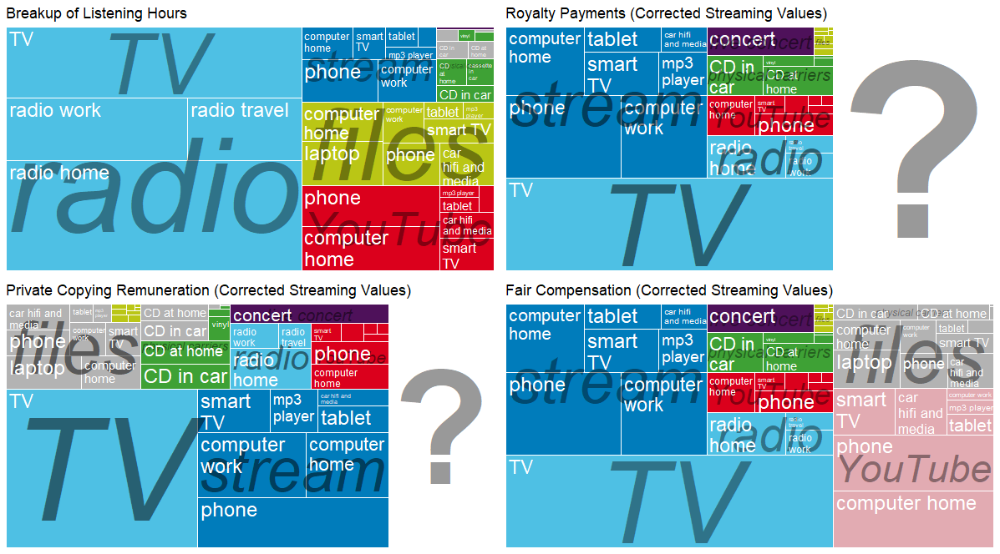

![]()
| Pillar 1 - Music Economy | |||
|---|---|---|---|
| Topic | Description | ||
| pillar | problem | availability | feasibility |
| Pillar 1 | Value of music sector | One-off | EY study on the cultural and creative industries (2015) |
| Pillar 1 | Value of music sector | One-off or one recast | CEEMID studies on national music economies |
| Pillar 1 | Employment | One-off | EY study on the cultural and creative industries (2015) |
| Pillar 1 | Employment | One-off or one recast | CEEMID national music industry reports |
| Pillar 1 | Employment | Annual | Eurostat, lacking granularity |
| Pillar 1 | Employment | Data gap | Absence of granularity on the employment of the various sub-sectors, in particular in defining the roles of the various sub-sectors and the importance of the not-for-profit sector in terms of employment. |
| Pillar 1 | Employment | Data gap | HU, SK pilot successful to add granularity. |
| Pillar 1 | Value of music sector | Data gap | No EU-level assessment since 2015 |
| Pillar 1 | Strucutre of the market | Data gap | Absence of pan-European data detailing the number of companies, employees, revenues for the sector and the subsectors. |
| Pillar 1 | The impact of the not-forprofit sector on the overall economy of the music sector | Data gap | No data available on the specific impact of the not-for-profit sector, especially in the live music sub-sector |
| Pillar 1 | Recorded music | Subject to partnership with IFPI | IFPI |
| Pillar 1 | Authors and publisher’s stream | CISAC partnership | CISAC |
| Pillar 1 | Authors and publisher’s stream | GESAC | GESAC |
| Pillar 1 | Recorded music stream - performer rights | Data gap | No aggregated data on neighbouring rights collections Partner with AEPO-ARTIS and SCAP. |
| Pillar 1 | Music publishing | Data gap | No aggregated data on the music European music publishing business |
| Pillar 1 | Synchronisation rights | Data gap | IFPI data available on the recorded music side but not on the publishing side. |
| Pillar 1 | Independent music companies | Data gap | No aggregated data on the independent music sector (value, number of companies, employees, etc.) |
| Pillar 1 | Live music | Data gap | Some data is compiled by Live DMA, ETEP or Yourope, but there is no aggregated data on the pan-European live music sector listing the value of the market, the number and size of venues and shows, number of festivals, share of European artists, among other data points. |
| Pillar 1 | Exports | Data gap | No pan-European data on the export flows between EU countries and outside the EU. |
| Pillar 1 | Exports | Data gap | Embedded cultural tourism export. |
| Pillar 1 | Music retail | Data gap | Granular data on some countries via retail associations (UK, France, Germany) but no pan-European aggregated data. |
| Pillar 1 | Financing of the music sector | Data gap | No aggregated data on how the sector is financed (from investment fund to bank loans and subsidies). |
| Pillar 1 | Live music regulation | Data gap | No aggregated information available on the various legal and tax systems within the EU applied to the live music sector. |
| Pillar 1 | Copyright regulations and evolution of copyright regimes | Data gap | Although many copyright laws applicable in Europe originate from the Commission, there are few instruments available to monitor the state of copyright regulation across the EU |
Executive summary
Following the Open Policy Analysis Guidelines, Deliverable D1.1—Economy of Music in Europe: Methods and Indicators identifies critical research questions, data sources and gaps, and data collection methods regarding the economy of music in Europe. The deliverable begins by reviewing definitions of “the music industry”, the categorisation of musical activities within the system of national accounts (SNA) and statistical classifications of economic activity (ISIC and NACE), and the three primary income streams within the music industry (the live music, author or publishing, and recording streams). It then turns to the topic of value, first identifying the types of value created by musical activity and then considering legal and economic dimensions of valuation, to the end of establishing the theoretical contours for a market comparator model currently under development within T1.1. This model is designed to take into account both the high degree of informality of the sector and the current prevalence of zero-price uses of music, and to provide more accurate and actionable assessments than are currently available of the value added by musical assets. After introducing the concept of mixed enterprise and personal surveying as a means of improving insight on informal economic activity in the sector, the deliverable identifies data gaps relevant to national policy in our pilot study target country of Slovakia, critically reviews the data gaps relevant to EU-level policy first identified in the Feasibility study for the establishment of a European Music Observatory (Commission et al. 2020), and proposes data collection methods appropriate to filling specified data gaps. It finally presents indicators co-developed to measure the economy of music in Europe, followed by considerations on key policy concepts and a brief outlook on future activities in T1.1 and WP1 as a whole.
Note
Both follow the Open Policy Analysis Guidelines and the best practices of the European Union’s Knowledge For Policy and the European Open Science Cloud portal.
- You can access this document, see changes, comment, and make suggestions in our open repository.
- You can find in the open repository, with a standardised file system, reusable text, figures, bibliography, and data.
Glossary
administrative records: consistent data sources originally not intended for statistical purposes, for example, the music work registry of a collective management society can be the basis of statistics on music works.Adult Education Survey (AES): A standardised EU survey that covers adult participation in education and training (formal, non-formal and informal learning) and is one of the main data sources for EU lifelong learning statistics. It sometimes contains cultural and creative industry specific questions.Artisjus: ARTISJUS Magyar Szerzői Jogvédő Iroda Egyesület is the Hungarian collective management society for authors.BIEM, Bureau International des Sociétés Gérant les Droits d’Enregistrement et de Reproduction Mécanique, the international organisation representing mechanical rights societies.CEEMID: CEEMID was multi-country project that was a predecessor of Reprex’s Digital Music Observatory. It transferred thousands of indicators to the Digital Music Observatory and offered it to the future European Music Observatory.Gross value added (GVA): an economic productivity metric that measures the contribution of a company, sector, region or company; it is closely related to GDP.EU-LFS: a large household sample survey providing quarterly results on labour participation of people aged 15 and over and on people outside the labour market; it is conducted in every EU member state.EU-SILC: A survey-based, harmonised statistics on income and living conditions.European Statistical System (ESS): The ESS is the partnership between the EU statistical authority, which is the Commission (Eurostat), the ‘National Statistical Institutes’ (NSIs), and ‘Other National Authorities’ (ONAs) in each EU country.ILO: the International Labour Organization is the only tripartite U.N. agency. Since 1919 the ILO brings together governments, employers and workers of 187 Member States , to set labour standards, develop policies and devise programmes promoting decent work for all women and men.ISIC: The International Standard Industrial Classification of all economic activities, abbreviated as ISIC, is a standard United Nations Statistics Division (UNSD) classification of economic activities; its European version,NACE, is highly harmonised with ISIC.ISCO: the International Standard Classification of Occupations (ISCO) is an International Labour Organization (ILO) classification structure for organizing information on labour and jobs.Musicautor: Musicautor is an organization of composers, authors and music publishers for collective management of copyright in Bulgaria. As a consortium member they will create use cases for some of our deliverables.NACE: Nomenclature of Economic Activities is the European statistical classification of economic activities. Statistics produced on the basis of NACE are comparable at European and, in general, at world level.OPA Guidelines: the Open Policy Analysis Guidelines (pdf).SDG: The 2030 Agenda for Sustainable Development, adopted by all United Nations Member States in 2015, provides a shared blueprint for peace and prosperity for people and the planet, now and into the future. At its heart are the 17 Sustainable Development Goals (SDGs), which are an urgent call for action by all countries - developed and developing - in a global partnership.shadow price: In economics, Shadow prices are assigned on the basis of assumptions and estimations from economic facts when explicit prices are not observable.SOSR: Statistical Office of the Slovak Republic.SOZA: Slovenský ochranný zväz autorský pre práva k hudobným dielam, the Slovak Performing and Mechanical Rights Society (SOZA) executes international standards on copyright protection in the territory of the Slovak Republic. As a consortium member they will create use cases for some of our deliverables.Statistical register: a continuously or regularly updated set of objects for a given population, which helps to administer surveys (whom to interview or send a questionnaire to, how to select interviewees.)VAT: Value-added Tax.
Introduction
The Open Music Europe work plan is grounded on a series of policy dialogues and documents produced by the European Commission during the 2010s and early 2020s. In 2015, the European Commission started a dialogue with representatives from the music sector in Europe, with the aim of identifying key challenges and possible ways to tackle them, including with EU support (European Commission 2021). The Music Moves Europe framework has since emerged as a central site for these discussions and, more broadly, for EU initiatives and actions to promote the diversity and competitiveness of Europe’s music sector in terms of policy and funding. As part of the 2018 Preparatory Action “Music Moves Europe: Boosting European music diversity and talent,” the EU commissioned the creation of the Feasibility study for the establishment of a European Music Observatory (Commission et al. 2020) (in short: EMO Feasibility Study). The Horizon Europe call under which Open Music Europe was funded, Towards a competitive, fair and sustainable European music ecosystem, explicitly refers to the relevance of the Music Moves Europe policy context.
In Open Music Europe, we structure our data-driven research in accordance with the four pillars identified in the EMO Feasibility Study: WP1 focuses on the economy of music in Europe; WP2 on music diversity and circulation; WP3 on music, society, and citizenship; and WP4 on innovation and future trends. In specific, WP1 focuses on two significant music industry policy problems: how can the European music sector provide more and better employment for music professionals, and how can it create more value added for the European economy? Our research intends to help design and monitor policies that advance these goals, while supporting the “triple transition” of the music industry: i.e., policies that enable the industry to perform better on digital platforms and be more sustainable environmentally and socially, while also improving its business standards in general. All four research work packages in Open Music Europe can furthermore be viewed through a sustainability lens: WP2 and WP3, we deal with social and environmental sustainability, and in WP4, we address the digital transition. In WP1, we focus on ensuring that music businesses and professional career tracks in music are financially sustainable, and that the European music industry remains globally competitive.
Note
We are committed to the Open Policy Analysis Guidelines. All documents supporting this report from the proposal and hypothesis-forming part are stored and versioned on this repository with standardised file structure: Report on the European Music Economy. Website: Open Music Europe Consortium project website—Digital Music Observatory data platform.
Background documents and earlier versions: proposal stage—10.5281/zenodo.6464782, comparator model—repository.
Funded by the European Union under Grant No. 101095295. Views and opinions expressed are however those of the author(s) only and do not necessarily reflect those of the European Union or the European Commission’s Citizens, Equality, Rights and Values Programme. Neither the European Union nor the granting authority can be held responsible for them.
Music is a very-labour intensive sector; capital investments in tangible assets are lower than in most economic sectors. Investments in music, like in all copyright-based industries, are mainly made on a personal level, and compensated for natural persons. From a macroeconomic point of view, corporate income is relatively low in the European music industries, and most of the value added to the national economy is earned as personal income. Such work is either paid directly as personal income or after accruing intellectual property rights (related to the composition of musical works and/or the fixation of their performance in sound recordings) in the form of royalty income. The most effective way to increase the economic value added by the music sector to national economies and the EU economy would likely be to implement policies that improve the economic position of music professionals and the level of security of their pay, and/or that expand the ways they can exploit copyrights and neighbouring rights.
Economic value added is about personal and corporate income; in a sector that is mainly organised around atypical work arrangements, increasing the level and predictability of the (currently highly precarious) work income of individuals is perhaps the surest means of increasing employment quality and quantity. Policies that aim toward this goal would also be in line with the relevant European Parliament resolution to reduce the risk of precarious work in the European Union (European Parliament 2017), which has been followed up on by several policy and legislative initiatives.
Open Music Europe mainly aims to help improve public and business policy design with data as evidence. The problems of measuring and improving the two key components of the sector’s added value—compensation for the work of the music professionals, and the way they can exploit their rights—are connected to both a theoretical problem and a more practical one: the high degree of decentralisation of the industry, combined with a high level of informality, makes measuring (and improving) economic activities difficult. The informality of the industry also poses challenges for the production of statistics. Due to informal working conditions, many music professionals disappear from official measurements of income and employment, including the monitoring of income related to the exploitation of copyright and neighbouring rights.
A very large segment of music industry workers—at least 13.9% of the people working in artistic roles and an unknown (but potentially higher) percentage of technical and managerial workers—earn their living in the informal music and creative economy, or in microenterprises with low levels of formalisation (International Labour Office (ILO) 2023, 60–61). In these cases, even if a microenterprise’s employment form fulfils the minimum requirements of formal employment (with social security contributions and paid sick leave), it is unlikely to provide the same pensions, life-long learning, work safety protection, and other quality-of-life benefits that many European workers in larger organisations enjoy. Much of our work considers current and future good practices in collecting data about the informal economy. We would like to emphasise here that although the term informal economy is often associated with illegality, in the UN and EU policy context, it excludes illicit activities, and is rather discussed solely in terms of providing more decent conditions of work.
The Open Music Europe grant agreement and task list state that we will build a market comparator model, i.e., a comprehensive economic model which allows consistent comparisons of copyright-based asset (transfer) values, licensing fees, and quoted or implied (shadow) prices (thus, in practice, a business and public policy tool that can correct or corroborate the remuneration of music creators). In T1.1, we focus on methodologies and data collection modes that support this task. If we are to use the market approach for valuations, we must consider the differences in the way music is licenced and royalties are paid for. Valuation aims to establish a calculated value of copyright-protected assets consistent with the expected, legally acceptable future income streams of the assets. Taking a future income stream as a given, we arrive at the asset value; in taking the asset value, we can exclude future revenue streams that are incompatible with this value.
From an economic point of view, these questions are two sides of the same coin, but different stakeholders in the music economy are facing different sides depending on whether they have the ability to set prices, or only take prices. Collective rights management organisations are usually concerned with price-setting on income streams. For collective rights management organisations, establishing a fair price for a defined quantity of music use is one of their core business tasks, and proper pricing can be seen as part of their fiduciary duty towards the rightsholders that they represent. On the other hand, individual rights management entities––i.e., record labels, music publishers, and their distributors—are usually concerned with implied (transfer) asset value given currently-foreseeable projected income. Such entities mainly use valuation with an asset value view if they cannot negotiate prices. Labels and publishers––perhaps with the exception of global “major” players––are mostly price takers; they do not have the market power to set their terms. Their concern is usually the transfer of assets: they want to acquire royalty-earning assets (musical works or recordings) that are undervalued or dispose of those that are overvalued compared to their earnings outlooks.
For labels or even self-releasing musicians, a simpler, but equally important decision must be made based on similar information: which elements of a given musical repertoire should be actively promoted, against marketing expenses, and which should be passively managed without dedicated marketing expenditures? In a public policy context, this is also the decision facing a music export office, which must set priorities on the use of limited promotion funds available for an almost infinitely large and often very diverse repertoire.
In accordance with the needs of both cultural policymakers and these various market actors, WP1 of Open Music aims to address the following key research questions:
How do music-related work income and copyright income develop compared to the average of the European economy? What is the process of music income real convergence between the richer and poorer countries of the EU? (See Adding value in the literature review.)
What kind of policies can help to increase the value added to the sector? What kind of copyright policies can improve royalty income, particularly in EU countries where such income is below average?
What does the informality of the music sector mean for actors within the sector? How can the informality of the music business be conceptualised, and how can the informal music economy be correctly measured for its value added and employment? How can we conceptualise and measure the precarity of work in the music industry? (See in literature review the employment subsection.)
How can we support consistent price-setting and asset valuation for business activities (e.g., price-setting by collective management organisation or repertoire acquisitions by labels and publishers) and public policies (e.g., policies aimed at the better protection and administration of copyrights and neighbouring rights or policies on music export)? How do zero-price transactions and shadow pricing come in to play here. (For more precise definitions see in the literature review valuing copyright and neighbouring rights.)
How can we improve statistical practices, and measuring and monitoring practices in general, to better support research and innovation, evidence-based policymaking, and effective business administration in relation to the above questions?
Literature review
Music industry
We follow a definition of the music industry developed by the EU Joint Research Centre (JRC); this definition puts the standard American music business/music industry definition into an EU context. The difference in presentation is that in the American policy context, the music industry is characterised as part of the entertainment industry (“the monetised function of leisure time”); in Europe, it characterised as part of the cultural and creative industries, and more recently, the cultural and creative sectors and industries (CCSI). The European definition is more inclusive toward non-monetised forms of music practice and non-profit organisations and/or social enterprises; this push for inclusivity follows recent debates in the European policy context about the inclusion of the cultural heritage sector, which can hardly be described as an “industry”, in the CCSIs1.
In the American definition, the “music business is a system of delivering music to consumers. Like any system, it creates and delivers things that have value to consumers (songs, recordings, and performances) but must do so within a dynamic external environment. The music business revolves almost entirely around three creative events: the writing of a song, the live performance of a song, and the making of a recording of a song. Three separate, but interrelated, revenue streams exist for the song, the live performance, and the recording” (Hull et al. 2011, 51.). In European definitions, various aspects of these activities have also been present. The EU JRC settled for the adoption of the American “music trade”, “music business”, or “music industry” (synonyms) definition as described above (Andra Leurdijk and Ottilie 2012, 15–18).
The Music Industry in National Accounts and Statistical Systems
The system of national accounts (SNA) is an internationally standardised system of accounts designed to enable international comparisons of statistics on economic activity. A satellite account is a framework of presentation for the economic data of a particular area in relation to the overall economic analysis of the central framework of the national accounts. The use of satellite accounts for education, health, tourism, and environmental issues is commonplace. The primary aim of satellite accounts is to address particular needs, like monitoring community health or environmental conditions. Additionally, they provide an avenue for experimenting with novel methodologies and accounting practices.
As of 2023, there is no standardised statistical measurement of the “music industry” within the system of national accounts (or most current satellite accounts, at least within the EU, to our knowledge). There are several reasons for this: most immediately, the “music industry” is not considered as such in statistical systems. The statistical data classification nomenclatures behind the system of national accounts are ISIC (International Standard Industrial Classification of All Economic Activities) on a global level and NACE (Nomenclature générale des activités économiques dans les Communautés Européennes) in its European adoption. Even after the significant revision of NACE in 2006, neither classification system considers music—or other CCIs, such as film—as “industries” per se. Rather, the individual economic activities that make up these “industries” are split over numerous domains. For instance, in the late 20th century, the “music industry” was often used as a synonym for the sound recording industry—see, for example, (Burke 2011)—, which in ISIC and NACE is categorised together with music publishing as part of one economic activity group (J59.2). However, in the 21st century, the live performance of music has emerged as a bigger business than the sale of recorded performances. In the NACE standard classification, the live music industry is categorised together with all other forms of performing arts (under group R90).
A related problem is the high level of informality in the music sector (see Section 1.7 Informal economy and mixed surveys), which consistently poses both theoretical and practical problems for the measurement of the economic performance of music. Open Music Europe will connect the problem of the invisibility of musical activities within statistical systems and the system of national accounts to the problem of informality. In the 2010s, the CEEMID project introduced new measurement and valuation methodologies with regard to the music sectors in a set of European countries, taking particular aim at the challenge of informality. This project was motivated by the lack of reliable data on how the Hungarian, Slovak, and Croatian music sectors add value to their respective national economies (Antal 2015, 2017, 2019b, 2019a). While the three country studies had slightly different policy focuses, they had to cope with a common problem: the low level of formalisation of the music sectors of these countries. CEEMID introduced methodologies from the economics and statistics of informal economies, which are relevant to Open Music Europe insofar as the problem of informality and the measurement challenges that it brings are prevalent all over Europe—even, for instance, in the far more developed UK music sector.
Value Creation within the Music Industry
As a counterpoint to the fragmentation of statistical knowledge on music in Europe, shared structural factors of the global music economy enable certain stable working assumptions and definitions. Although the European music sector is mainly made up of small players, the global music economy has some very large enterprises that are well-known and influential in many countries in Europe and beyond, such as the Universal Music Group, Sony Music, Warner Music Group, and Live Nation. Because of the high degree of globalisation of musical activity, it also has global industry bodies, such as IFPI or CISAC, which use definitions that have become quasi-standard across different countries. There is also a common analytical understanding among both researchers and economic actors of what constitutes the “music industry” or “music business” in Europe and the U.S., even if these concepts are not harmonised with international statistical classifications.
In our mapping of the music industry, Open Music Europe uses the standard “three income stream model” that is widely accepted in the United States (Hull et al. 2011), as well as in the European Union and Europe in a broader sense—Andra Leurdijk et al. 2013; (Andra Leurdijk et al. 2013; Adnra Leurdijk and Ottilie 2012) (see Figure 1 below.)

The concept of the value chain shows what processes add value to the services of the music business to the end-user. It should not be confused with the concept of value added. The value chain shows why music businesses can sell music at a higher value than its production cost; value added is new income that music businesses and music professionals can keep after all their costs are paid. A well-functioning value chain can increase the value added of the industry and the national economy. For our measurement purposes, we use the value chain to pinpoint those units where new income (and the jobs that this income supports) are generated, as well as where this income and these jobs can be empirically observed.
The fact that music is not present in the ISIC or NACE classifications does not mean that music businesses or their value chains are entirely excluded from the statistical processes that generate national- and EU-level statistics. The businesses in the value chain are asked to provide data as part of the “Creative, arts and entertainment activities” division and/or the “Motion picture, video and television programme production, sound recording and music publishing activities” division. Thus, to some extent, data is present, but the degree of its standardisation and comparability is low and/or unclear. In 2012, the ad-hoc ESSNet Culture working group of the European Statistical System made several recommendations on how to change data collection and processing on the cultural and creative industries in order to better enable the measurement of the performance of these industries in official statistics (Bína, Vladimir et al. 2012). However, these recommendations were not consistently and widely adopted in Europe. We will later evaluate in our research to what extent our pilot countries, Slovakia, Hungary, and Bulgaria, enacted these recommendations, and to what extent doing so in the future might be feasible.
The concept of Total Economic Value: welfare creation by the music industry
At a societal level, the starting point for music policy is rooted in welfare economics. Social welfare is the sum of all values that governments may seek to maximise. Total economic value includes use and non-use value, each of which can comprise market and non-market value. A typical structure for total economic value is presented in Figure 2 below.
Use value
Direct use values are more likely than other types of value to have a corresponding market activity giving rise to a measure of value through a market price or return: e.g., the total income of a creative or cultural enterprise. Direct use values can be categorised as either:
- Consumptive: there is active use of the non- market good or service by the valuer. An example of a consumptive direct use value is attendance at a performance.
- Non-Consumptive: the non-market good or service is not diminished or used up—there is vicarious use by the valuer. An example of a non-consumptive direct use value is watching a television programme about a cultural event—vicarious use of the event.
Indirect use values come from using a good or service, but not through one’s own direct engagement with it. An example of indirect use value is living near cultural facilities that one does not visit, but which nevertheless alter the value structure of one’s living conditions. Indirect use values tend to be overlooked in a market setting. However, they are sometimes reflected in market activities and prices in other parts of the economy. An example is property prices: e.g., a family’s home can increase in monetary value if a derelict neighbourhood warehouse is converted into a concert hall, even if the family never visits it.
Non-use value
Total economic value goes beyond the direct and indirect use of goods and services to include non-use values. Non-use value is the value that people, or other actors assign to goods and services even if they never have and never will use them. Non-use values have been categorised as follows (Kmety Bartekova 2021):
- Option value: the value placed on individual willingness to pay for maintaining an asset or resource, even if there is little or no likelihood of the individual ever using it.
- Bequest value: values placed on individual willingness to pay for maintaining or preserving an asset or resource that has no use now, so that it is available for future generations.
- Existence value: value reflecting the quality-of-life benefits people receive from knowing that, say, an environmental resource, such as Antarctica, exists.
- Altruistic value: the value placed on individual willingness to pay for maintaining an asset or resource that is not used by the individual, so that others may use it.
Bequest and altruism values arise from others’ current or future use of a good or service. Pure existence values arise from merely knowing that a valuable good or service exists. In many European countries, an important role of music education within the general education system is the introduction of national folk/classical music heritage (or even popular music heritage) to new generations; local and national governments often value and spend on music in this way. This is an example of the way policy can articulate the non-uses value of music.
Market and non-market value
Market values for creative goods and services are usually reflected in the prices paid. For a given industry or an industry sector, the output value (see direct use value above) would represent the total market value of that industry or sector; this being said, the music industry is well known to offer many zero-priced services. In this case, it is not the final user, but an intermediary—for example, a radio station—that is paying for the music.
Non-market values are values placed on goods and services by individuals, other actors, or communities at large that are not expressed in a market, and hence do not have an accurate price from which to derive a value (i.e., the market price differs strongly from the total value society is willing to place on the good or service). Public goods and externalities are the most common sources of non-market values. Public goods are goods that cannot be restricted or rationed, so a price cannot be charged for their consumption. Externalities are those aspects of the total social benefit or cost of a good or service that are not considered in its market price.
The concept of total economic value provides a framework in which to consistently identify non-market values so they can be included in an economic assessment. Non-market values are primarily non-use values (option value, bequest value, and existence value). However, they may also include indirect use values (vicarious use of a good or service) and direct use values (actual use of a good or service). In most of our work within `Open Music Europe, we will focus our attention on the use value of music.
Increasing the value created by the music sector: value added
Gross value added (GVA) is an economic productivity metric that measures the contribution of a company, sector, region, or company. GVA provides the monetary value of the goods and services (total output) that this company, sector, region, or country has produced, minus the cost of all inputs and raw materials directly attributable to that production (i.e., intermediate consumption). GVA is closely related to the most-quoted macro-level economic indicator, gross domestic product (GDP). GVA shows gross domestic product without the impact of subsidies and taxes (tariffs) on products. In other words, GVA shows GDP before the effect of government fiscal interaction with the industry.
On a macroeconomic level, Gross value added (GVA) is closely related to the Gross Domestic Product (GDP) — with regard to the music industry, the difference is the net value of subsidies received by industry actors and taxes paid by them. As the CEEMID project has shown in Hungary and Slovakia, contrary to common belief, the developing music sectors of these countries contributed with far more taxes than subsidies received; indeed, in Slovakia, the music industry was shown to be one of the highest net payers into the national treasury.
On the level of music businesses, the value added is the sale value of music services and products minus their cost of production; this is the revenue generated by the capital and labour factors of a given business. As mentioned throughout this deliverable, the music sector is highly informal, and the two factors of production (capital and labour) are undivided. For example, the value added of a self-publishing and self-releasing individual musician is the personal income of this person, who performs work to create the music, but also makes investments into both tangible and intangible (or intellectual, social, cultural, etc.) assets.
If we have a sufficiently formalised music business—for example, a limited liability company centred around a commercially successful artist—the profit and loss statement and the balance sheets of this enterprise allow us to observe the value added, i.e., the economic or accounting income above the cost of production. The problem with the informal music economy is that many of the costs are not accounted for—only the gross income is. The reconciliation of the value-added data from various data sources—such as an administrative record like a financial report, an enterprise survey, or a personal survey—is not straightforward. This is a problem that we will try to address with various methods throughout the Open Music Europe project, including through cross-WP cooperation.
In the music industry, increasing value added mainly depends upon increasing mixed income—see Section 1.7 Informal economy and mixed surveys—and the value of copyright protected assets, which in turn increases the royalty income from the licensing of such assets. The below sections turn to the methodological issues connected to this important business and public policy goal.
Legal Considerations when Valuing Music Assets
Both policymakers and business entities would welcome the development of music valuation and pricing models that better fulfil the above-mentioned aims and are more economically and legally sound than current models. From a technical point of view, such a model would define legally compliant statistical and accounting processes that are capable of deriving correct values and prices from available accounting data, supplemented by survey-based evidence where appropriate. When developing our Open Music Europe market comparator model in T1.1, we aim to fulfil these requirements. We then hope to populate this model with data in T1.2 and make it reproducible across several target countries in T1.3.
Toward valuation in accordance with the CDSM
With regard to the values and prices of rights in particular: in accordance the Copyright and related rights in the Digital Single Market Directive (CDSM), what is needed for the music industry is a model that will assess “the actual or potential economic value of the licensed or transferred rights, taking into account the author’s or performer’s contribution to the overall work or other subject matter and all other circumstances of the case, such as market practices or the actual exploitation of the work” (European Parliament and the Council 2019a, recital 73). The copyright policy aim articulated in the CDSM has two aspects:
This copyright policy aim has two aspects:
Adequate income, “taking into account the author’s or performer’s contribution to the overall work”; this is directly related to our research topic on decent pay for decent work (see Section 1.6.6 and Section 1.7.3 see Employment subsection.).
Market practices, or “the actual exploitation of the work”; this is directly related to market monitoring and establishing quantities of exploitation, as well as to price levels, the most important market practice information considered in our methodological work on observing transactions.
To elaborate, this policy aim seeks to enable appropriate remuneration for rightsholders, which, in market transactions, will be translated into licensing agreements that add a price to the license transactions. The price in these licensing agreements is the unit price, which increases the royalty income proportionally with music use (for example, with the number of songs listened to, or the number of days when public performance took place in a public restaurant). Setting this price is perhaps the most important business policy issue in the music economy, and accordingly, monitoring price movements is a critical public policy issue.
While copyright law creates the intellectual property rights that bear economic value, in practice, the challenges of calculating an acceptable price for music are mainly not related to copyright law: “from all branches of the legal system, it is for tax law and for competition law to have the highest impact on price through their monitoring over fairness of prices charged by enterprises active in the market.” (Garzaro and Garzaro 2019). Whilst copyright policy plays a central role in determining remuneration for authors, performers, and publishers in the music economy, in practice, stakeholder disputes in daily management practices are common in this area, thus mediating or even distorting the economic articulation of the law itself.
In WP1, where we aim to create a model that helps to set remuneration at an adequate level for copyrights and neighbouring rights, we must respect several other branches of law, each of which has its own peculiarities. For instance, competition law applies directly and in the same way as copyright law across Europe, and diverges from U.S. law: in Europe, too-low (predatory) and too-high (excessive) prices are illegal, whereas in the U.S., only too-high prices are illegal. Tax law, on the other hand, is mainly concerned with international transactions and transfer prices that would enable international company groups to hide their tax base from authorities abroad.
The administration and measurement of prices is furthermore strongly related to accounting, financial reporting, and audit laws. Bookkeeping practices record the number of transactions and the prices charged. Financial analysis establishes the fair value of economic assets—including intellectual properties, such as copyrights or neighbouring rights—based on the expected future income of the asset. Fair valuation, in general accounting terms, intends to avoid misrepresentations of future expected income that might mislead important business stakeholders, like licensing partners, owners, or the tax authorities. Fair valuation models are useful tools to set the fair copyright remuneration, because they show the fair (lawful) future exploitation possibilities of the asset on the basis of recorded facts (e.g., quantities and prices in the royalty accounts of the entity in light of market prices).
To sum up, what is required is a model that balances compliance with a range of directives and regulations that are intended to ensure the fair treatment of rightsholders on the one hand, and other stakeholders, including consumers and authorities, on the other. Such a model should not translate to excessively high or low prices in Europe for music users and should maintain the “arm’s-length standard” to prevent the illegal transfer of profits with applying unfair prices. At the same time, such a model should enable the decent remuneration of the rightsholders.
Zero price transactions
What makes understanding and modelling music markets so difficult is that while they are seemingly in plain sight of the public and policymakers, many individual market transactions are invisible. In many advanced music markets, more than half of the instances of commercial music use are not paid for directly by individual end consumers. Radio stations and popular user-uploaded content (UUC) platforms like YouTube, TikTok, or SoundCloud offer zero-price services for users, as do most licensed music streaming platforms like Spotify . Consumers furthermore do not pay for recorded (or sometimes even live) music heard in restaurants, bars, stores, or other businesses not directly involved in live performance2.
In the past years, there has been an increased interest in analysing online platforms on which consumers do not pay a price for content. Watching a music video on YouTube, or reading amusing content on Facebook, does not cost a consumer anything. Instead, companies receive payment from advertising or commissions. As a recent competition study pointed out, such practices probably originated from using music and audiovisual content on radio and television (Competition & Markets Authority 2020). While there is a growing consensus on how to effectively incorporate zero-price transactions into competition practice, in our experience, the empirical observation of markets involving many zero-price transactions is very challenging. When consumers pay a price, both the quantity of the sales and the prices are recorded on the invoice, and this information is translated into tax returns and financial statements. Zero-price transactions, on the other hand, have no invoices and no simple accounting trail.
Of course, just because a transaction has no direct price, does not mean it is valueless. The practice of assigning a monetary value to an item, commodity, or service that is not ordinarily bought and sold in any marketplace is called shadow pricing in economics. Shadow prices are assigned based on assumptions and estimations from economic facts. Shadow pricing is mainly used in the valuation of intangible assets. The widespread use of zero-price transactions in music makes it particularly important to bring together the various streams of information necessary for the computation of shadow prices for assets protected by copyrights and neighbouring right.
The CEEMID full market comparator model discussed in this deliverable used a methodology that established normalised shadow prices comparable to observable licensing fees. In Open Music Europe, we want to improve upon and harmonise the data inputs of this model, while also improving its usability. Specifically, we want to make it sufficiently generalised that it can be transferred from the Hungarian and Slovak jurisdictions to Bulgaria first, and then to further polities in Europe (and perhaps eventually beyond).
Valuation Principles
An important technique when setting a price for transferring copyright-protected work or setting a price on its licensing to a user, is called valuation. Typical motivations behind valuation are setting transaction strategies (i.e., future conditions for the exploitation of assets) or pursuing litigation concerning the adequacy of the existing conditions for the exploitation of assets (Flignor and Orozco 2006). Basic valuation principles are enshrined in the fair valuation principles of the WIPO and the fair value principles of the International Financial Reporting Board – their use is not a mere recommendation, but rather a statutory obligation in IFRS countries, which includes the European Union member states. The Fair Value standard (IFRS 2011) of IFRS has been incorporated into national European laws via EU law (and has remained UK law after Brexit, as well).
One of the prerequisites of intellectual property valuation is that the assets have an income stream. In 2008, the global recording industry body, IFPI, published Valuing the use of recorded music, created by PricewaterhouseCoopers (PwC 2008). So far, this is the only methodological guide that we are aware of about the application of the WIPO and IFRS standards to musical assets with the help of econometric models (Flignor and Orozco 2006; Puca and Zyla 2019).
The recognised fair valuation principles stipulate that when valuing a particular (type of) asset, the “most applicable method” out of the three allowed approaches must be used: these are the cost approach, the income approach, and the market approach. As explained below, the market approach is the only viable approach for music, which is why we will build a so-called market comparator model in this project.
The cost, income, and market approaches to valuation
The cost approach to valuation calculates the replacement cost of an asset. Because most music is created by natural persons, and often in the informal economy—see Section 1.7 Informal economy and mixed surveys—, the (historical) cost approach is rarely a good option. This is because a natural person in a sole proprietorship, or a more informal economic form, often does not systematically record all of his or her costs. As we mentioned above, the lack of appropriate business records for most creative activities related to the composition and performance of music is partly related to the fact that rightsholders are usually natural persons who do not systematically account for their working time, i.e., the time when they are composing music or practising for a live or recorded performance. Furthermore, if their enterprise is informal or has a low level of formalisation, they may not be able to keep records of their material costs in a way that would satisfy tax authorities or meet the demands of a copyright litigation. This key policy insight relates to our other data collection efforts and other items on the policy agenda (see Section 5.)
The income approach estimates the income generated by an asset (e.g., royalty flows from the recording of a musical work) by using an appropriate discount rate, or rate of conversion of estimated future income into present value. The income approach is often impractical in a music industry context because payment periods are too irregular and/or too long to enable the calculation of an appropriate discount rate. For instance, when a user buys an mp3 file in a music store, it triggers a single royalty payment after the deductions of the cost of sale on the marketplace. On the other hand, in a streaming platform, the same user’s royalty payments appear on a monthly basis if she listens to the song during that month. Finally, on the radio, royalty payments usually appear every year. In the case of annual payments, the time frame of valuation would be too long to enable the calculation of an appropriate discount rate. Calculating an appropriate discount rate would also be practically impossible for many uses. Finally, in the case of a high degree of informality or the presence of sole proprietors, freelancers, and natural persons, the business administration practices and records adequate to meet the burden of proof for tax or copyright litigation purposes are also often lacking.
The income approach compares the royalty flows from the recording of a work by using an appropriate “discount rate.” When a user buys in a music store an mp3 file on 1 July 2015, it triggers a single royalty payment after the deductions of the cost of sale on the marketplace. In a streaming platform, the same user’s royalty payments appear monthly when she listens to the song and on the radio, usually every year. The discount rate provides a proper comparison between remuneration received in July 2015 and April 2021. The income approach is often impractical when we have irregular or annual payments. With annual payments, the valuation’s time frame would be too long. Calculating an appropriate discount rate would also be practically impossible for many uses. And finally, in the case of a high degree of informality or the presence of sole proprietors, freelancers, and natural persons, the adequate business administration that meets the burden of proof for tax or copyright litigation purposes is also lacking.
The market approach tries to identify a payment rate based on sufficiently similar uses. Many ideas have been tried internationally to identify the sufficiently similar use of music streaming. One approach is relating ad-supported and automatically selected playlists to radio streams; another is relating such playlists to cases in which the user controls the selection of songs and may even download them. We will use the market approach for practical uses, which will need many small data transformations because “sufficiently similar uses” may pay out licensing fees in a range of different payment schemes (lump-sum, monthly, annual, etc.).
The market approach is built on a somewhat circuitous reasoning. On an economic level, the price system and the market as an institution are assumed to function well, so that price information can be carried over from correctly priced transactions to misprised ones. However, the model itself cannot identify which transactions are correctly priced. The market approach is still a fundamental valuation method, and it is important to note that the other two methods, i.e., the cost approach and the income approach, also rely on market information that is not challenged: as mentioned, the cost approach needs a market-based deflator, whereas the income approach needs a discount rate computation from market data. All three valuation methods are thus market-based and assume that the market functions correctly.
On a legal level, the market approach presupposes no severe collusion of how copyright, competition, and fiscal law are set or applied in the market. This assumption is necessary to determine valuations that compare legal market transactions. A relevant complexity is that the different branches of law that the economist must consider here are harmonised among EU member states on different levels. Competition law is directly applicable across member states, whereas accounting law applies the same IFRS standards in all member states but differs in other aspects. Copyright law is harmonised to some extent by international and EU law but differs more significantly among member states. These complexities can impact economic practice: regardless of whether an economist wants to present fair values of assets for (potential) asset transfers or fair prices for licensing assets, actual licensing policies or broader copyright policies can be challenged on non-valuation grounds.
Accordingly, while we hope to achieve a scientific peer review of our economic methodology and its legal basis, it is possible that our models will be tested in a court of law for practical applicability. This requirement affects how will we incorporate previous work into the work done in Open Music Europe. CEEMID, with the current consortium partners, started to develop a consistent, full market comparator model following two pieces of jurisprudence: OSA vs Léčebné lázně Mariánské Lázně a.s (ECJ 2014) and AKKA-LA v Konkurences padome cases (ECJ 2017). Both cases were primarily argued based on competition law and used the price comparison method of competition authorities; in both cases, the Court of the European Union still had to reconcile concepts of copyright and competition law. The CEEMID partners took these cases and the WIPO’s valuation methods and tried to align them with accounting practices in Hungary, Slovakia, and Croatia; the results were challenged in litigation in Hungary and Slovakia. In Open Music Europe, we treat the last CEEMID models used in Slovakia in 2021 and in Hungary in 2019 as a basis and seek to improve them with reference to both the challenges raised in these countries and any complexities that occur while reproducing the model in different settings. Specifically, we seek to improve:
- Our model’s consistency with current concepts of copyright, competition, fiscal law, economics, finance, and accounting; this includes attention paid to the elaboration of relevant concepts in newer jurisprudence and legal scholarship. Which is to say, generally, we seek to improve the scientific underpinning of a model that grew out of practice.
- Our practices of market comparator data collection from various sources (e.g., administrative records and a range of types of surveys), and our methods of data management and analysis.
- Our methods for calculating shadow prices, due to the ever-increasing prevalence of zero-price market transactions.
The application of fair valuation principles is particularly challenging in the case of private copying, where transactions are not recorded (as they are not market transactions), and in streaming, which is a relatively new technology that is seen in licensing as a mixture of earlier mechanical copy-based and public performance-based licensing, and entails so many transactions that most rightsholders (and even their national organisations) lack the data processing capacity to administer rights or challenge incorrect payments.
Transaction models and data
The economy pillar of a future European Music Observatory must provide methodologies to create indicators that help valuation, either from a transaction price setting or an asset value appraisal perspective. The same set of transaction data is required for both perspectives. Applicable pricing models are:
The public performance model which entails various pricing standards for live music, music publishing and the recording side. For radio broadcasting, transmission, and background music, it uses annual blanket licensing. When analysing public performance uses and payments, we must be careful with the timeframe of the analysis: while public performance revenues are usually accrued throughout the year and paid once, there may be different accrual and payment periods present in a given market.
The mechanical licensing model is used for physical products, legalised digital downloads, and home copying. In most cases, it uses lump sum values, paid upfront and for perpetuity. In the case of home copying levies/compensation, the sum is not expressed per unit, but in annual lump sums, which are in some countries historically connected to the mechanical pricing model. In Private Copying in Croatia the analogy is explained in detail (Antal 2019a). The mechanical licensing model is well harmonised globally via
BIEM(Bureau International des Sociétés Gérant les Droits d’Enregistrement et de Reproduction Mécanique), the international organisation representing mechanical rights societies.The streaming model is de facto harmonised by the fact that the major players in the world are the same, and they appear to use similar model contracts. Legally speaking, the solutions differ across the UK, U.S., and EU, but the streaming model can always be described as a hybrid of the mechanical licensing and the public performance models. A streaming provider needs to have a licence from both the publishing side (which is present in mechanical licensing) and all interested parties that are present in public performance licensing. In streaming, the default accrual and payment period is monthly.
The UCC/UGC/UUC model (user-created content, user-generated content or user-uploaded content; mainly applied by YouTube) has a different remuneration stream that is currently changing, at least in Europe, in accordance with new copyright provisions. It has similarities with the streaming model in how the royalties are paid out, but the legal and economic bases of the payments are different. The
Open Music Europepartners will go into details about this type of streaming in a separate paper on the music market comparator model.
These licensing models are very well harmonised internationally. As a result, methodologies synthesising these models could be easily transposed to any EU member state, the United Kingdom, or even the U.S., assuming careful consideration of the problem of radio transmission licensing in the target jurisdiction. It is important to notice that while the same principles can be applied in many jurisdictions, the actual value of the rights will differ in each country because of different market and regulatory conditions.
The earlier CEEMID model focused on a common price/shadow price harmonisation methodology that translated observed revenues and/or listening quantities from the three income streams into notional hourly royalty figures (note that the model excluded the background music sold for business-to-business uses in sectors such as hotels, restaurants, and catering). This model has not yet been published but has been used in business-confidential work (Antal 2019d). A visual plot from the CEEMID market comparators model appears below in Figure 3.

The public grant of Open Music Europe allows the publication and improvement of this model, as outlined in the previous subsection. We aim to improve both the statistical processes used to observe and record revenues and the economic calculations used to determine prices or shadow prices.
Equitable remuneration
Because the term equitable remuneration as often arisen in music policy debates in the past years, we want to clarify that this technical term often does not cover what people would instinctively consider ‘equitable’ or ‘just’. Equitable remuneration is a clearly circumscribed legal concept, which has an economic aspect.
In international law, equitable remuneration was first enshrined as Convention C100 of the International Labour Organisation (ILO), stipulating that men and women should receive equal pay for equal work (International Labour Organization (ILO) 1951). Within the context of international copyright law, it was introduced as a modification of the Berne Convention by the Rome Convention for the remuneration of the broadcasting of recorded fixation of music works (recordings) since 19713. Equitable remuneration is originally connected to a compulsory licence that must be paid to the performing artists and music producers when recorded music is played in a publicly accessible location. In a compulsory licensing regime, the rightsholders are not in a position to negotiate the royalty rates or deny use to any business entity, because these are not negotiated market rates4.The payable rate is called equitable (and, in some jurisdictions, fair) . The law stipulates in these cases that the rates must be set as if they have been negotiated in a market transaction by two willing parties without monopoly (supplier power) or monopsony (buyer power).
In an international context, a study by Europe Economics and IVIR has shown that there are notable differences in how equitable remuneration is understood, and that it is often used as a synonym for fair remuneration, meaning ambiguities persist in the use of the latter term as well (Europe Economics & IVIR 2015).Moreover, the equitable remuneration standards in international treaties do not set a standard for calculating the monetary value of the equitable remuneration that is payable to the rightsholders.
The ICET model
A supplementary source of data on commercial musical activities that is potentially relevant to valuation is audience-side surveying, i.e. cultural access and participation surveying. The ESSNet-Culture working group recommends measuring cultural access and participation (including market- and non-market forms) on the basis of the ICET model (Bína, Vladimir et al. 2012, pp 237-239). This model entails four components:
- Information: to seek, collect and spread information on culture;
- Communication and community: to interact with others on cultural issues and to participate in cultural networks;
- Enjoyment and expression: to enjoy exhibitions, art performances and other forms of cultural expression, to practice the arts for leisure, and to create online content;
- Transaction: to buy art and to buy or reserve tickets for shows.
The ICET model is based on nearly 50 years of quantitative sociology and media research. It is a well-established methodology endorsed by important statistical standard-setters, and therefore, surveys based on this model are difficult to challenge in court. For more details on the ICET model and cultural access and participation surveys based on it, see (Haan and Adolfsen 2008; Haan and Broek 2012).
Informality in the Music Industry
Defining and identifying informality in the music industry
The concept of the “informal economy” has changed significantly over the last three decades. Unfortunately, especially in an Eastern European context, it is still associated with illegality and invisibility for the tax authorities . However, the International Labour Organization (ILO) definition of the informal economy now explicitly excludes illicit activities. The modern definitions used by the OECD, ILO, or IMF recognise the importance of the informal economy, and do not focus on legal anomalies, but regard the informal economy as a core component of economies at every level of development: “the informal economy refers to all economic activities, excluding illicit activities, by workers and economic units that are, in law or in practice, not covered or insufficiently covered by formal arrangements […] While the informal economy exists everywhere, it is more prevalent in low-income countries, where it represents 89 per cent of total employment, compared to 82 per cent and 50 per cent, respectively, in lower-middle and upper-middle-income countries and 16 per cent in high-income countries” ((ILO) 2015). Employees are considered informally employed if their employer does not contribute to social security on their behalf, or if they do not benefit from paid annual leave or sick leave.
The specific legal and regulatory articulations of informality in the music sector vary across Europe. A pan-European survey in the context of the creation of the Music Moves Europe music export strategy (European Commission, Directorate-General for Education, Youth, Sport and Culture, Smidt, et al. 2020) found that that 12 EU members states (Austria, Belgium, France, Germany, Greece, Ireland, Lithuania, Luxembourg, the Netherlands, Slovakia, Slovenia, and Spain) and the United Kingdom had created a specific legal status for artists, often linked to either 1) a minimum level of remuneration for artists, or 2) special conditions for social security rights. In other countries, artists and music businesses use a mix of freelancing standards, sole trader statutes, and microenterprise statutes. The strategy document concludes that in the majority of the EU countries surveyed, “[t]he lack of specific employment status weakens the artists’ level of social protection especially in the context of music export, where touring and showcasing (that became crucial to compensate revenue loss due to the digital shift and the resulting evolution of the music sector’s value chain) lead to an intensification of short-term international mobility, often in different countries” (European Commission, Directorate-General for Education, Youth, Sport and Culture, Smidt, et al. 2020, 19–20).
The careful consideration of informality is crucial to the development of a correct approach to valuation within the music industry. The analysis of industry value added is usually based on the system of national accounts; the main source of the national accounts is administrative (tax) records from enterprises and enterprise surveys, which focus on corporate income and income paid mainly in formal and typical labour arrangements to workers. When assessing sectors and industries with a high degree of informality, such as music, we must turn to mixed surveying, because the large informal part of the music economy is not represented in these administrative data sources and enterprise surveys alone (insofar as it is not organised around formal enterprises).
Mixed surveying as a means of measuring informal economic activity
The ILO and the OECD (following the IMF) suggested using mixed enterprise- and household or personal surveys to capture the employment and income created in the informal economy. Specifically, the OECD Manual on Measuring the Non Observed Economy Economy endorses a combination of LFS surveys with in-depth more specific surveys: “monitoring the number and characteristics of the persons in the informal sector and the conditions of their employment and work can be achieved by periodically including a few additional questions pertaining to the informal sector definition in an existing labour force or similar household survey […] Labour force or similar household surveys are often conducted at a higher frequency than specialised, in-depth informal sector surveys. Thus, the data obtained from the former concerning the evolution of labour inputs in the informal sector can be used to extrapolate data from the latter […]” (International Monetary Fund (IMF) 2002, 170). Similarly, the manual on the same topic of the International Labour Organization suggests taking the LFS as a starting point: “there are many advantages to including the measurement of both informal employment and employment in the informal sector in a labour force survey or a household survey that includes the labour force as a topic These include the relative ease with which the topics can be added to an existing survey, cost-effectiveness, conceptual coherence with other labour force statistics, and the analytical possibilities offered by the collected information.” (International Labour Organization (ILO) 2013)
Mixed (individual and enterprise) surveying methods have been used to measure informality in the global and European workforces. However, reliable numbers for the cultural and creative sectors and industries—and the music industry in particular—are difficult to come by. For instance, according to the ILO, 40.2% of the global workforce and 13.9% of the European workforce in the Arts, entertainment and recreation sectors and industries work in informal arrangements (International Labour Office (ILO) 2023, 11, pp. 60-61.). However, translating these numbers to the music industry is not a straightforward task. This is because the ILO statistics are based on the occupational coding of the respondents, and the number 13.9% mainly refers to the coding “artistic occupations” – in music, this coding usually applies to the minority of creators who have a formal music education and work in classical music or jazz.
In EU countries, including Slovakia, Hungary, and Bulgaria, the informal economy is measured in greater detail by the European Union Statistics on Income and Living Conditions (EU-SILC) survey. EU-SILC, however, also fails to provide granular data on music-related occupations. The CEEMID music professional surveys mentioned throughout this report sought to fill this gap. While these surveys did not strictly follow the EU-SILC and ILO surveying guidelines, they did use a similar methodology to assess the informal component of Central and Eastern European music industry employment, finding this component to be near or above the global average. We do not think that this is a mistake: informality may be lower in the Western and Nordic parts of the EU, and it is also likely that many informal arrangements were not properly attributed to the creative sectors. The Digital Music Observatory surveys have furthermore estimated formal and informal technical and managerial employment in the sector, which is not possible using the EU-SILC survey alone. It is likely that a proper mapping the EU-SILC survey methodology would also show a much higher level of informality in the music sector.
One conceptual basis for the work done in CEEMID and the forthcoming work in Open Music Europe is the 1993 ILO definition of informality (slightly edited in 2018), which highlights two critical aspects of informality: “The informal sector may be broadly characterised as consisting of units engaged in the production of goods or services with the primary objective of generating employment and incomes for the persons concerned. These units typically operate at a low level of organisation, with little or no division between labour and capital as factors of production and on a small scale” (International Labour Organization (ILO) 1993) The creation of the Hungarian and Slovak national music industry reports in the CEEMID project focused on these key aspects: the lack of typical or formal labour arrangements and the lack of a division of labour and capital as factors of production. The CEEMID data shows that in Hungary, Slovakia, and Croatia, the typical stakeholder in the music economy is a self-publishing, self-releasing (group of) artist(s), who exploit their labour, own invested assets, and own copyrights or neighbouring rights. It furthermore shows that a typical music professional receives income from 20-60 “gigs” within a year. In many cases, the closest resemblance to an employer relationship is their relationship with a collective management organisation. Later, the Central European Music Industry Report found that from Austria to Armenia, the situation is similar regardless of the level of economic development and industry income [Antal 2020]
Mixed surveying approaches are widely used in the European Union – in our first pilot country, Slovakia, the Statistical Office of the Slovak Republic (SOSR) has used mixed surveys since 2010. Open Music Europe will carefully review the questionnaires used. We will also take into account the aforementioned CEEMID music professional surveys conducted in Hungary in 2014 and 2017-2019, Croatia in 2015, Slovakia in 2017, and across Central Europe in 2019. Open Music Europe seeks to build upon these foundations, while better accounting for complexities and challenges on the production side of statistics. With the combined use of LFS data and primary data from newly designed music professional surveys, we plan to measure personal income in the informal economy. The reconciliation of personal income with the value-added concept, and the reconciliation of employment in the informal economy with the full-time equivalent concept of the national accounts, are important tasks for the economists within our Consortium and beyond. The following sections elaborate our approach to this challenge, first with regard to the problems of the value-added concept and employment, and then with regard to the more practical matter of designing and administering mixed surveys.
Employment in the Music Industry
Work in the music industry, regardless if it is artistic or technical, managerial work, can often be described as “precarious”. Precarious work is a term originating in work sociology, which refers to working conditions with a high risk of being underpaid, insecure in terms of employment, and/or with low working safety, for example, a high risk of sexual harassment (Haynes and Marshall 2018). In accordance with the previous section on informal economies, precarious work is related to the labour economics term “informal work”: for applications of these concepts within the music domain, see the Music as Labour collection, particularly the introductory chapter by the editors (Abfalter and Reitsamer 2022). CEEMID has used the precarity framework in the last decade to understand how music professionals earn their living.
Music industry precarity is often researched with qualitative sociological and anthropological methods (Zendel 2014). By contrast, less consideration has been given to methods for measuring precarity using quantitative surveys or administrative data. An exception arises in the Netherlands: Martin Olsthoorn has offered two formalised indicator definitions that are compatible with the Dutch Organisatie Strategisch Arbeidsmarktonderzoek (OSA) Arbeidsaanbodpanel survey [Olsthoorn (2014)]5.The Central European Music Industry Report and the previous national reports mentioned through this deliverable have developed a similar survey question set, which focuses on the risk of low total income. Particularly in work conducted for the Czech music export office, the CEEMID team built CART models based on the CEEMID survey data to quantify the efforts required by Austrian and Czech musicians to reach full-time equivalent income by drawing on a large number of income sources. We were able to predict that Austrian musicians with a 6-7 years of composition and recording history had a chance to stay in the music business and earn a full-time living; in Czechia, about 12-13 years of composing history were needed. As the Central European Music Industry Report and national reports showed, the difference could be hypothetically explained by a lower level of copyright protection in Czechia (or Slovakia) – as well as a underdeveloped recording industry more generally. In the CEE region, we saw a particularly strong reliance on author’s revenues as compared to the UK or Austria in the absence of viable commercial record sales.
These are promising foundations, which suggest that a properly focused survey of music professionals could provide policy-actionable insight on informal work in the industry. However, this earlier work did not place survey findings directly into a valuation context. In WP1, we aim to conduct similar surveys and interpret our findings vis-à-vis our valuation model. This requires diversifying and improving our surveying methods, and specifically, tailoring them even more precisely to account for the high degree of informality in European music economies.
Mapping the music industry in the national accounts, satellite accounts
A satellite account is a framework of presentation for the economic data of a particular area in relation to the overall economic analysis of the central framework of the national accounts. The use of satellite accounts for education, health, tourism, environmental issues is commonplace. The primary aim of satellite accounts is to address particular needs, like monitoring community health or environmental conditions. Additionally, they provide an avenue for experimenting with novel methodologies and accounting practices.
Data gaps
Music is very much a data-driven industry, particularly insofar as it was one of the first global industries that moved much of its sales to a few global digital platforms that record incredibly detailed information on uses and users alike. Some data gaps in the music industry are illusory from the point of view that the data are recorded somewhere; said data are “only” not processed and aggregated into formats that would be required for public policy analysis. Other data gaps are due to the music industry’s large informal component, wherein many important data—for example, costs or investments—are not recorded systematically.
The Feasibility study for the establishment of a European Music Observatory (Commission et al. 2020) enumerates a number of data gaps in its pillar on the economy of music in Europe (see EMO Feasibility Study Section 2.3, Figure 4). As the EMO Feasibility Study makes clear, most European countries do not currently maintain a consistent top-line indicator, such as the share of the music industry in GDP, gross value added by the music industry, or total employment in the music industry. This is the result of the “invisibility” of the music industry in the system of national accounts (discussed in Section XX), which also translates into a lack of further indicators that are usually present in the SNA (such as exports and imports, etc.). Because we do not have key indicators for the music industry as a whole, we also do not have indicators for its important sub-sectors, such as live music or the recording industry.
In Open Music Europe, the WP1 is guided by a concrete exploitation aim that is relevant to our music industry stakeholders, as well as to the majority of actors in the European music industry as a whole: increasing the value of music rights. Our planned WP1 pilot study aims to improve the valuation of music rights in our target countries, which is a prerequisite to increasing the value of these rights. Our first priority is thus to find the data needed for policy interventions to this specific end. Our second priority is to improve the measurement of the two most important top-line economic indicators: 1) concepts of income in the music industry (value added), and 2) employment in the music industry.
The main data collection areas for our WP1 pilot study are Hungary, Slovakia, and Bulgaria. In Slovakia, Open Music Europe coordinator SINUS and partners REPREX and SOZA have concluded a Memorandum of Understanding with the relevant national authorities. Slovakia is one of the few European countries that has invested into the creation of a cultural and creative industries satellite account. We will contribute to this pioneering effort by adding methodological and data inputs to make these satellite accounts more usable for the music industry; this work will improve the measurement of various types of income (value added) and employment in the industry. In Hungary, Open Music Europe partner ARTISJUS (the collective management society for music authors) has been developing a particularly comprehensive music valuation system, which has been successfully used in Slovakia and Croatia as well, albeit with less detail. Our aim within Open Music Europe is to generalise this valuation method, and to transfer as much methodological know-how as possible to Bulgaria, which is perhaps the least developed music economy in the current European Union (not counting the smallest members states that do not have an economically sizable sector at all).
Data Gaps Immediately Relevant to National Policy in Slovakia
In accordance with out pilot-project-driven research agenda, we will start our analysis of data gaps on the national level. Cultural policies are mainly formed on a national level, and due to the territorial nature of copyrights, business policies are usually also formed at this level. The statistical processes that provide key economic indicators are operational primarily on national levels as well. With few exceptions, European-level data gaps cannot be filled if there are no (interoperable) statistical processes in place in the individual member states that collect the data.
We group data gaps on the national level into two categories:
- Data gaps within the standard statistical products based on the system of national accounts (GDP, GVA, employment, etc.). Due to the special structure of the music industry, these standard statistical products are not available for it, which arguably puts it at a disadvantage vis-à-vis other industries.
- Data gaps stemming from the lack of microdata on industry-specific issues. As of 2023, there are no statistical processes in place that would create reliable microdata and indicators for such issues on an EU-wide level, nor in most member states on a national level. It should be noted here that in public policy, the music industries are often discussed together with the cultural and creative industries writ large. The data gaps of the music industry are often not specific to music, but arise generally with regard to all of these sectors and industries.
To prioritise new research capable of filling these data gaps, we selected our first pilot country, Slovakia, based on its proactive approach to data-based cultural policy. We carefully examined Slovakian policy documents to see which data are not sufficiently collected. Slovakia is neither a particularly data-rich nor a data-poor EU member state. On the one hand, the Slovakian national statistical services do not offer as wide a range of products as the most developed EU statistical services. On the other hand, Slovakia is one of the few countries that has invested into building satellite accounts for the creative industries, with the aim of filling in the first types of data gaps specified above (i.e., the fact that standard key economic indicators, such as GDP share or GVA, are missing). These satellite accounts are far from ready: for example, they do not contain accounts for the music industry in particular. By reviewing the gaps faced by policymakers and the methodological problems in making these satellite accounts truly usable for industry policy, including music industry policy, we can select research aims that can make a true impact.
In this respect, the main policy document is the Stratégia kultúry a kreatívneho priemyslu Slovenskej republiky 2030 [Strategy of the cultural and creative industries of the Slovak Republic 2030] (Ministerstvo kultúry Slovenskej republiky 2023), which is based on a series of evaluations that tried to create and interpret indicators for these sectors. An important input of the strategic policymaking was the Revision of spending on culture compiled by the IKP (Institute for Cultural Policy—analytical unit of Slovak Ministry of Culture) and ÚHP (Útvar hodnoty za peniaze—analytical unit of Slovak Ministry of Finance). This report comments upon, among other findings, the problematic data presentation of the music sector, and judges the data coverage as insufficient. It is mainly based on the KULT surveys, which are a national, non-harmonised (to EU or other international standards) yearly survey series under the supervision of the Slovak Ministry of Culture targeted at different parts of the cultural and creative industries, which collects data on activities of different stakeholders falling within respective CCI groups.
According to the law (Act No.540/2001 Coll. on State Statistics, Codex Slovak Republic, 2001), certain reporting units (e.g., enterprises) are obliged to provide certain required data in accordance with the following requirements: they must provide such data free of charge, completely, correctly, truthfully, and within certain specified deadlines. However, in the Slovakian context, several waves of the KULT surveys were apparently marred with methodological problems, for example, the survey on public events in the field of professional music culture (KULT 16) is unreliable both because of the incompleteness of the reporting units and because of methodological inconsistencies (e.g. some festivals report attendance as the number of season tickets sold, others count the number of visitors to each concert separately). The statistics on music recordings (KULT 19) do not include all publishers, which is problematic in a sector where most music is self-released, and publishing and sound-recording activities often overlap.
The main objective of the national cultural policy in Slovakia is the creation, presentation, research, and preservation of the arts, creative industries, and cultural heritage, resulting in a high quality and accessible artistic and cultural offer and positive socio-economic impacts of culture (MKSR 2023, p7).
On a related level, historically cultural policy in the Slovak Republic has not historically been assessed with measurable indicators, like other public policies before 2021; it was seen to be difficult to objectively link specific activities in culture and art with measurable indicators. To ensure a higher quality of public policy discourse on culture, the Institute of Cultural Policy decided to create a new strategic policy document based on what they perceived as a best practice from the United Kingdom. (Bille and Olsen 2018). This document sets measurable targets to ensure a more objective assessment of cultural policies.
The Slovakian Institute of Cultural Policy, based on inputs from more than 200 domain experts, prepared two rounds of systemic evaluation of cultural policy objectives, related sub-objectives and measurable indicators for 16 pilot cultural policies during 2021 and 2022. In the first edition of Set of goals and measurable indicators for cultural policies in Slovakia (IKP 2022), they developed draft objectives and indicator candidates for the umbrella cultural policy, 13 sub-sectoral cultural policies and two cross-cutting cultural policies. Music is one of these sectors, but as we will see, with no basic indicator coverage (GVA, GDP, employment, etc.) and only unreliable ad-hoc coverage on industry-specific issues. In subsequent editions, draft evaluations for other cross-cutting policies are also envisaged. One of the 13 sub-sectors is Music.
The aim of the national music policy as set by IKP and Ministry of Culture is to develop the creation, presentation and knowledge of the musical arts. Sectoral sub-objectives are as follows: 1. Develop quality original music in Slovakia. 2. Develop the accessibility of musical art, and the diverse range of musical types in Slovakia. 3. Develop current and build new audiences for music making and presentation activities. 4. Develop presentation activities abroad. 5. Explore: preserve, research, and communicate cultural heritage and knowledge in the field of musical arts. Each of these goals are given indicator candidates, and in some cases indicators. Several indicator candidates are identified as lacking in data sources, or they identify our Consortium member, SOZA, as the future data source.
After the kick-off meeting of the Open Music Europe project, partners SINUS, EUBA, SOZA, and REPREX signed a Memorandum of Understanding with the Slovak Ministry of Culture and the Institute for Cultural Policy (Open Music Europe 2023). This MoU ensures that we will apply the Eurostat public policy indicator harmonisation guidelines in at least one member state, i.e., Slovakia.
The policy document Stratégia kultúry a kreatívneho priemyslu Slovenskej republiky 2030 [Strategy of the cultural and creative industries of the Slovak Republic 2030, henceforth, Slovak CCI Strategy 2023] (Ministerstvo kultúry Slovenskej republiky 2023)) highlights as a weakness a perceived insularity of the Slovakian cultural economy, citing the example of a comparison between Slovakia and Czechia regarding the GDP of culture and creative industries and their export-import activities. According to this document, the per capita trade of this sector with foreign countries is 4.4 times higher in the Czech Republic. Slovakia buys much less culture from abroad and exports much less of its culture abroad (MKSR 2023). We will use this example to revisit the data gap on music exports.
Given the methodological difficulties of measurement, part of the difference may be illusory and explained with different statistical procedures. Suppose we want to take a more granular view and extend the analysis of music export initially given in the Slovak Music Industry Report (Antal 2019c). In that case, we have to improve both our surveying methods and our means of accessing and working with administrative data sources. This will be one of the case studies that we plan during our annual meeting with Slovak government stakeholders, as specified in our Memorandum of Understanding.
The starting point of our needs assessment is a critical revision of the Feasibility study for the establishment of a European Music Observatory (short: EMO Feasibility Study) and the Slovak CCI Strategy 2030 (MKSR 2023).
Data Gaps Relevant to EU-Level Policy
Before turning to the EMO Feasibility Study (as previously referenced), we list here data gaps identified in other works related to the Music Moves Europe policy agenda: e.g., the recently published Analysis of market trends and gaps in funding needs for the music sector identified the following policy problems (European Commission, Directorate-General for Education, Youth, Sport and Culture, Le Gall, et al. 2020):
• Work is needed on the possibilities of the harmonisation and facilitation of administration on diverse mobility-related concerns, such as VAT, visas, social insurance, the transportation of music instruments, etc. • Policies are needed that protect local music and cultural spaces, including music venues and rehearsal spaces. Such spaces are important incubators for music artists, meeting points for the sector and the general public, and strong cultural assets in general. Support could range from developing policy toolkits (such as the “Agent of Change” toolkit) and targeted funding in collaboration with local governments. • In a longer-term perspective, and as part of possible further regulatory developments in the EU internal market, an assessment is required of the need for and feasibility of a regulatory approach to promoting cultural diversity in the music sector, bearing in mind the precedent of the EU audiovisual regulatory framework.
The European Music Export Strategy aims to promote Europe’s music diversity and talent beyond European borders, in a way that enhances the competitiveness of Europe’s music sector on the international market. Likewise, music export, as defined in this report, happens when artists and their representative professional teams and music companies gather revenue by selling their music in various forms outside of their national borders. The main music export revenue streams are: • Performance fees for festivals and concerts (plus eventually merchandising); • Royalties generated by live music performances, broadcasting of music in radio, streaming platforms, television etc.; • Recorded music revenues, from physical sales and digital revenues; Furthermore, music export revenues can also come from sync fees (synchronizing or licensing music to various audiovisual media formats), as well as branding and other collaborative campaigns and deals, in which artists can charge fees for their personality brands. This strategy document separately addresses the taxation problems of the sector, which also came up among the most important problems in the detailed Hungarian and Slovak analysis.
Most KPIs related to value added and employment are gross income indicators; however, the over-taxation of the music sector would necessitate the creation of gross (pre-tax) and net (after-tax) indicators as well. For instance, the Hungarian and Slovak music industry reports showed that the VAT treatment of music is not only stifling touring but can be seen as excessive in many countries. The Open Music Europe project plan and grant agreement foresee the development of open science and open data services which complement the existing statistical services of Eurostat. In partnership with key music industry and policy partners, we hope to fill, to the degree possible, approximately 41 data gaps within the policy context of Music Moves Europe, as identified by the EMO Feasibility Study. We will develop key performance indicators for music businesses and policy indicators to “better detect the performance of the European music sector and its contribution to economic and social development, as well as to sustainability.” At the proposal stage, we made the following pre-assessment of data availability for WP1 of our project:
In the case of EMO Feasibility Study Pillar 1, we are usually able to locate the source of the data, and we have some experience in processing the data and bringing it to light. We have mapped many perceived data gaps to the various data harmonisation projects of GESAC and CISAC, and we will seek cooperation with these organisations and their members to find a secure and voluntary way to retrieve the data. The only data gap that we do not intend to address is the “impact of the non-profit sector” – though we may address this in our WP3 on non-economic, societal values of music. After the first half year of research, we conclude that our initial assessments need to be refined. It is clear that a high-priority data gap is the coverage of key economic indicators from national and satellite accounts on gross value added, gross domestic product, employment and said components, etc. The data components needed to fill these basic gaps, if collected with a correct register and with the active and voluntary participation of the sub-sectors (such as publishing or live music) can fill many of the data gaps that we initially identified with lower priority.
Data on independent music companies is an area of overlap between Open Music Europe WP1 and WP2, because it relates to the competition policy angle, which underpins both economic and diversity policies. With a proper music industry statistical register, this data gap could be filled alongside with other, originally higher-priority gaps. Music export is central to Open Music Europe WP2 (circulation on the domestic and foreign markets), and we will use this as a use case to continue our work in our first planned stakeholder workshop. What did not appear in our initial assessment (nor in the EMO Feasibility Study), but appears to have a high policy importance, is the issue of value-added taxation (VAT). Talking about VAT is impossible without first establishing the actual added value in the sector; the administration of VAT requires a clearer view on the informality of the sector. We will add this topic to the initially foreseen data gaps.
Data Gaps that Impede Business Administration
The primary data gap that the feasibility study mentions is the “value of [the] music sector”, and the study cites the EYGM study (EYGM 2014) as a good example that produced one-off evidence. This report, commissioned by GESAC, has been partly recast since the creation of the feasibility study in 2021 (EY 2021). Neither the original study, nor the recast study, contains any fundamental valuations of the music sector. However, such valuations are commonplace in the sector itself, on an ad-hoc basis.
European music stakeholders would like to see the creation of a solution “as a centralised [emphasis added by the authors] music data and an intelligence hub at [the] European level” – which is to say, the creation of a European Music Observatory (Commission et al. 2020). As both a Finnish example and the aforementioned CEEMID project have shown, the inherent conflicts of interest, and the presence of many microenterprises, favour the incorporation of decentralised approaches as well (Osimo et al. 2019). The EMO Feasibility Study also stresses the need to learn from the CEEMID project, and to exploit rich open data sources, which usually require the development of open-source processing capacities. In the view of the Open Music Europe Consortium, one of the shortcomings of the EMO Feasibility Study is that it almost exclusively focuses on public policy data gaps. Because the music industry is data-rich, a sufficient reconciliation of business-side and policy-side data needs may bring to the surface many existing industry datasets that can be used for both private and public interests. Looking at the same set of evidence can improve the accountability of cultural policymaking.
The European music sector comprises tens of thousands of small enterprises, representing over a million people and a repertoire of millions of recordings. A bottom-up valuation of European music is not possible; however, building valuations bottom-up in a way that can be generalised is not only possible, but also necessary to check the consistency and quantity of top-down estimates such as those created by EY for GESAC (EYGM 2014; EY 2021).
In Open Music Europe, we want to facilitate better cooperation between in-house business valuations, public policy-relevant valuations, and macro-level valuations, with a focus on aspects of data gaps that can help both business valuations and public policy valuations. The CEEMID partners and Consolidated Independent have piloted a novel approach in the Central European Music Industry Report by taking a view on music businesses that is similar to the view that stock- and bond-market indexes take on small investors (Antal 2020). The universe of royalty-earning music assets is well over 100 million on most global DSPs, and almost no European stakeholder has a sufficiently large share in this actively traded portfolio that they can adequately understand changes of the main economic fundamentals that change valuations: which are to say, demand for the use of these assets, and the prices paid for their use (see Figure 5 below).
This pilot aimed to create a basket of observable assets that well represent the entire (musical track) universe in a similar way as equity and bond indexes are created. The original report only contains typical use values and prices and does not explicitly compute musical asset prices. REPREX, with the approval of Consolidated Independent, made the computed prices available in United Kingdom’s “Digital Earnings in the Digital Era” project, which aimed to recast UK music IP policies (see Figure 6 below).
In Open Music Europe, we will try to build further on this pioneering work to produce consistent statistical indicators of industry prices and quantities, which in turn are critical inputs to valuation models that can determine shadow prices and help re-price uses in which remuneration has been falling, compared to earlier, perceived fair levels. The creation of these indicators can benefit both business users and public policymakers, and we hope that this will motivate data sharing.
Data sources
Open Music Europe intends to build an open statistical infrastructure that is compatible with the national statistical infrastructures of the EU/EEA/candidate member states, but which is based on voluntary industry cooperation. We will build a similar framework that national statistical offices have in Europe, but at a smaller, cheaper, and more flexible scale, and on a different legal basis.
- We will collect data using similar statistical processes to statistical offices, but based on data assets made available via voluntary organisations;
- We will explore the possibility of improving national statistical office processes for a better combination of voluntary industry and mandatory official statistical data, vased on our MoU in Slovakia;
- We will harvest secondary microdata and process statistical data sources based on the Open Data Directive, in closer attention to the purposes that such data can serve.
Survey Data
As Open Music Europe D6.3—Data management plan indicates, the Open Music Europe consortium will manage data similarly to official statistical processes. The statistical infrastructure of indicators (see Figure 7 below

Specifically:
We will collect enterprise, mixed, and personal survey data using questionnaires and procedures that are ex-ante harmonised with existing European survey programs, particularly. LFS, AES, EU-SILC, Eurobarometer (for natural person units), and the SBS national structural business surveys (for enterprise units).
We will tap into administrative records (i.e., consistent data sources originally not intended for statistical purposes). In official statistics, this means gaining access to tax records. In our case, this means access to royalty accounts and voluntary access to the general ledgers of enterprises bookkeeping.
We will experiment with similar data sources, such as data harvested regularly from APIs, that Eurostat also considers “experimental” in their definitions of statistical processes.
These data sources are considered in the following sections.
Labour Force Survey (LFS)
Our most important survey is the EU labour force survey (EU-LFS), which is harmonised across the European Union. The EU-LFS is conducted in all EU countries, 4 candidate countries, and 3 European Free Trade Association (EFTA) countries. EU-LFS microdata for scientific purposes currently contains data for all EU countries, as well as data for Iceland, Norway, Switzerland, and the United Kingdom (up to the third quarter of 2020).
With regard to mixed economies, the OECD Manual on Measuring the Non-Observed Economy endorses a combination of LFS surveys with in-depth specific surveys, such as the Digital Music Observatory/CEEMID music professional surveys, which the Open Music Europe Consortium intends to further develop. To cite the IMF (that created this part of the manual):
“Monitoring the number and characteristics of the persons in the informal sector and the conditions of their employment and work can be achieved by periodically including a few additional questions pertaining to the informal sector definition in an existing labour force or similar household survey […] Labour force or similar household surveys are often conducted at a higher frequency than specialised, in-depth informal sector surveys. Thus, the data obtained from the former concerning the evolution of labour inputs in the informal sector can be used to extrapolate data from the latter […]” (International Monetary Fund (IMF) 2002, 170).
Similarly, a more recent ILO manual on the same topic suggests taking the LFS as a starting point:
“There are many advantages to including the measurement of both informal employment and employment in the informal sector in a labour force survey or a household survey that includes the labour force as a topic These include the relative ease with which the topics can be added to an existing survey, cost-effectiveness, conceptual coherence with other labour force statistics, and the analytical possibilities offered by the collected information.” (International Labour Organization (ILO) 2013)
Methodologically, this means both an ex-ante and ex-post survey harmonisation task: e.g., between the Slovak LFS survey and the Digital Music Observatory Music Professionals survey. Nonetheless, a standard LFS is not suitable for our Consortium as a primary data source. The LFS records the economic activities of participants on 1-digit precision level (NACE coding) and at 3-digit level regarding ISCO—this is insufficient prevision for identifying participants whose activity counts into the employment and production of the “music industry”. Because NACE does not have a “music industry” group or class, we find the employment or economic performance of the sector in various parts of NACE. In case we have at least a four-digit coding within NACE, we find, in a homogeneous form, a particular section. For instance, we can divide the J section, and division 59 in specific, into J591: film and television production and post-production activities, and J592: sound recording and music publishing activities. This is, however, a very small part of the music professionals; and many statistical products do not go down to 3- or 4-digit precision because of the high level of decentralisation of the industry: i.e., the fact that much of the industry is part of the informal economy (see Section 1.7).
With regard to music, the most problematic NACE division is R90 – which is, in reality, more important for the music industry than J592, but less clearly connected to music. The R90 division has only one group, R90.0, which is further divided into four classes: R90.0.1—Performing arts; R90.0.2—Support activities to performing arts; R90.0.3—Artistic creation; R90.0.4—Operation of arts facilities. Each of these sub-divisions could contain music activities, however, they are all mixed with theatre, film, and dance activities, etc. (all of which often also involve music).
Regarding employment, the International Standard Classification of Occupations (ISCO)is an International Labour Organization (ILO) classification structure for organizing information on labour and jobs. It is part of the international family of economic and social classifications of the United Nations. In theory, filtering by ISCO codes may be helpful in determining the total work down within the music industry, however, there is only one “clean” ISCO code that contains music-only workers: code 2652. These artistic roles (musicians, singers and composers) are of primary interest, but as the CEEMID partners have stated in the Slovak Music Industry Report, unlike classical and jazz music, popular and folk music is mainly learned via informal learning techniques, which do not lead to certification and qualification as defined in ISCO. Generally, the mapping of artistic roles (not only in music, but also in other creative industries), requires a special occupational questionnaire that incorporates informal and non-school based qualifications.
The bigger problem within ISCO category 2652 is that it does not cover the majority of the industry: i.e., persons working in non-artistic roles, for example, conducting activities within category R90.0.2 (Support activities to performing) arts and R90.0.4 (Operation of arts facilities). The way CEEMID handled this problem in the Hungarian, Croatian and Slovak surveys that it included an ISCO-based, but far more detailed coding of activity roles that the respondent was fulfilling. For example, we divided the artistic activities of category 2652 into job roles that are easier to identify with for creators, such as composer, singer-songwriter, performing musician who is not composing, DJ who produces own music, etc. The ISCO-based filtering of individuals in an LFS sample is problematic enough in artistic roles but gets even more difficult in managerial and technical roles. The CEEMID surveys created an ISCO/NACE-based classification with descriptions of technical, managerial, and other support roles that align well with category R90.0.2 (Support activities to performing arts) and R90.0.4 (Operation of arts facilities). For example, we created categories for transporters and drivers; transporting orchestras and bands usually requires special knowledge, vehicles, and in some European cities, special licences (a band has enough equipment on tour to qualify as a heavy truckload, but travels with enough artists and technicians to meet thresholds of uncharted bus services: it makes no sense to map professional drivers to the music industry without filtering out in a survey those drivers whose activities are aimed and specialised for the music industry). Our aim in Open Music Europe is the creation of a sufficient subset of ex ante harmonised LFS questionnaire items in a database that can be ex post harmonised with LFS-based (official) statistics, as well as our own surveys. In specific, we hope to:
Identify questionnaire items in the previous year’s Slovak LFS questionnaires, and check their availability in various EU countries, with particular attention placed on Hungary and Bulgaria for replicability.
Create a multi-language, open source, linked database of these questionnaire items.
Place the questionnaire items on our surveys (in
T1.2,T2.2andT3.2).
Because Slovakia uses the LFS for satellite accounting in CCSI, we believe that our Slovak partners and stakeholders have overcome some of the obstacles of using the LFS for this purpose; our intention is to review these practices and make them more suitable for the music industry.
Cultural Access and Participation (CAP)
CEEMID used extensive personal survey harmonisation to measure music access and participation; this enabled the collection of critical information about zero-price uses of music, such as radio, television, ad-supported streaming, and illegal and home copying. The Open Music Europe Consortium wants to further develop the CEEMID practice as a good practice that followed the best surveying practice identified by the ESSNet-Culture working group of the European Statistical System in the general cultural access and participation (CAP) framework. Note here that the CEEMID questionnaires adopted the CAP framework for the music and audiovisual cultural domain.
CEEMID has used questionnaire items that were standardised with the methodology created by the ESSNet-Culture working group of Eurostat and the participating EU national statistical authorities (Haan and Adolfsen 2008; Bína, Vladimir et al. 2012; Haan and Broek 2012), mainly based on pre-existing best practices developed in the Netherlands. The ex ante harmonisation of questionnaire items (the same question is asked in the same format, and with the same national language translations) is one of the prerequisites of joining data from surveys taken at different times, in different countries, and/or by different organisations. This practice has been developed by CEEMID since 2014 and further improved by the SurveyHarmonies project of SINUS and REPREX with the help of Musicautor, SOZA, and Artisjus in 2023. It was also the basis of the development of [retroharmonize] R language software package hosted by the rOpenGov community, organised by the Open Music Europe partner UTU (University of Turku) Data Science group and actively developed by REPREX. Open Music Europe will continue to develop these methodologies and tools for creating a music economy, diversity surveys and collecting data on the societal and sustainability aspects of music.
Unlike the previously mentioned LFS, cultural access and participation (CAP) surveys are not part of a permanent, standardised European statistical data collection program. Instead, a CAP survey module is periodically placed on the questionnaires of various harmonised European personal surveys, such as Eurobarometer, EU-SILC, or AES.
CEEMID and the MusicAIRE SurveyHarmonies project have ex ante harmonised the Digital Music Observatory CAP Survey to a great extent with Eurobarometer, and to a smaller extent with other personal surveys. However, ex post data harmonisation was not carried out with European survey metadata other than Eurobarometer. In Open Music Europe, we should harmonise with AES and EU-SILC, as well as improving the personal survey questionnaire.
Enterprise surveys
Member states within the European Statistical System (ESS) enjoy some degree of freedom in producing their structural business indicators and national accounts. Some countries with developed electronic infrastructure opt for the use of more administrative data sources (i.e., statisticians receive more data from company registers and tax authorities) or the use of more survey data (i.e., statisticians ask enterprises for data themselves directly).
Because we are building an open, collaborative statistical framework, we tend to be more survey-oriented because we do not have authorisation to gain individual access to tax filings of music enterprises. In Open Music Europe, our first step will be to review the existing practices of the Slovak Republic; when transferring our methods to Bulgaria or Hungary, we will review whether our surveying must be extended with additional data points.
In Slovakia, the structural business statistics are collected by the Statistical Office of the Slovak Republic (SOSR) using two surveys6:
An exhaustive survey of large enterprises, with questionnaire
Roc 1-01A survey of (a sample of) small enterprises, with questionnaire
Roc 2-01
We should build a questionnaire that adapts partly Roc 2-01 to be filled out by companies in the SKMBR.
Information about the enterprise surveys are taken from [] and the Eurostat metadata information page on the Slovak Structural Business statistics.
The Ministry of Culture of the Slovak Republic, pursuant to Act No.540/2001 Coll. on State Statistics, also carries out an annual long-term state statistical survey on the field of culture (KULT). The KULT statistical survey is governed by the programme of state statistical surveys compiled by the Statistical Office of the Slovak Republic, in cooperation with the Ministry of Culture, for a period of three years.
The reporting units, i.e., the persons required to provide data for the state statistical survey, are state and public institutions, self-governing regions, municipalities of the Slovak Republic, private companies, non-governmental organisations, churches and religious societies, and natural persons active in the field of culture. The following sections provide details on all of the above-mentioned surveys.
Slovakian large enterprise survey Roč 1-01
The purpose of the Roč 1-01 statistical survey is to obtain information on the indicators characterizing the activity of enterprises in the field of resource generation and allocation, financial management, and employment, as well as to enable the specification of economic activities for the purpose of time series recalculation. The selected indicators are specified according to the statistical classification of products by activity (CPA). The results of this statistical survey are used in the calculation of basic macroeconomic indicators of the system of national accounts, for the purposes of conceptual work and analytical work, to meet the needs of the information system of the SOSR, as well as the requirements of the European Statistical System and international organisations. The Roč 1-01 survey is a census-like, exhaustive statistical survey. The reporting (statistical) units are enterprises entered in the commercial register, contributory organisations belonging to the sector of non-financial corporations (within the meaning of the national accounts methodology, with 20 or more employees), and organisations with 0 to 19 employees which have annual sales of own performances and goods of at least five million EUR, which are entered in the register of organisations of the Statistical Office of the Slovak Republic. In order to sum up the desired top-line indicators for music industry (GDP, GVA, and employment), we need to receive data from the Roč 1-01 modules 177, 178, 182, 183, 184, 185, 186 and 304:
| Module 177 | data about gross turnover |
| Module 178 | data about costs (detailed structure) |
| Module 182 | data about selected gross turnover items |
| Module 183 | data about service consumption |
| Module 184 | data about material and energy consumption and stocks |
| Module 185 | data about goods in wholesale |
| Module 186 | data about goods at retail |
| Module 304 | data about employees and wages |
Small enterprises questionnaire Roč 2-01
The purpose of the Roč 2-01 statistical survey is to obtain information on the indicators characterising small business activity in the areas of resource generation and allocation, financial management, and employment, as well as to specify economic activities for the purpose of time series calculations. The results of the survey are used in the calculation of basic macroeconomic indicators of the system of national accounts, as well as for conceptual and analytical work to meet the needs of the information system of the Statistical Office of the Slovak Republic and the requirements of the European Statistical System and international organisations.
Roč 2-01 is a sample survey. The reporting statistical units are enterprises registered in the commercial register and contributory organisations that are market producers, with a number of employees between 0 and 19, and with annual sales of own performances and goods up to five million EUR, which are listed in the Register of Organisations of the Statistical Office of the Slovak Republic.
In order to sum up the desired indicators for music industry (GDP, GVA, and Eemployment), we need to receive the data from Roč 2-01 modules 177a, 178a, 182a, 183a, 184a, 185a, 186a and 304a:
| Module 177a | data about gross turnover |
| Module 178a | data about costs (detailed structure) |
| Module 182a | data about selected gross turnover items |
| Module 183a | data about service consumption |
| Module 184a | data about material and energy consumption and stocks |
| Module 186a | data about goods at retail |
| Module 304a | data about employees and wages |
Non-profit Organisation Survey NSNO 1-01
The music industry is also made up of non-profit organisations. The NSNO 1-01 questionnaire is used to collect data from non-profit organisations in Slovakia.
The purpose of NSNO 1-01 statistical survey is to obtain information for the national accounting system, specifically in order to meet the need for structural business statistics and financial statistics. The results of the statistical survey are used for analytical purposes, as well as to meet the needs of the information system of the Statistical Office of the Slovak Republic and the requirements of the European Statistical System and international organisations.
The questionnaire consists of following thematic areas:
- Intermediate consumption and complementary financial indicators
- Persons employed, wages and other costs
- Selected taxes
- Acquisition and sale of fixed assets
- Information and communication technologies (Total intangible fixed assets, valued rights, other intangible fixed assets)
- Fixed assets
- Key financial indicators
In order to sum up the desired economic indicators, the data from NSNO 1-01 modules 500, 391, 366 and 513a are crucial:
| Module 500 | data about Intermediate consumption and complementary financial data |
| Module 391 | data about employees, wages and other costs |
| Module 366 | data about selected taxes |
| Module 513a | data about fixed assets |
KULT Surveys
KULT surveys represent questionnaires which are specific for the Slovak Republic. The Minister of Culture has entrusted the coordination and provision of tasks related to the performance of statistical surveys in the field of culture to the National Enlightenment Centre (short: NOC) based in Bratislava. The findings from KULT surveys are influential in shaping cultural policies, promoting cultural diversity, and fostering a better understanding of the cultural landscape in Slovakia. Additionally, the data generated by these surveys are used by various stakeholders to make informed decisions and to contribute to the enrichment and development of Slovakian society.
KULT surveys focused on the music industry in Slovakia include the following:
KULT (MK SR) 5—01 Ročný výkaz o hudobnom telese a umeleckom súbore [Annual report on the musical ensemble and the artistic ensemble] (Ministerstvo kultúry Slovenskej republiky 2022c)
KULT (MK SR) 16—01 Ročný výkaz o verejných podujatiach v oblasti profesionálnej hudobnej kultúry [Annual report on public events in the field of professional music culture] (Ministerstvo kultúry Slovenskej republiky 2022a)
KULT (MK SR) 19—01 Ročný výkaz o výrobe a distribúcii zvukových záznamov hudobných diel [Annual report on the production and distribution of sound recordings of musical works] (Ministerstvo kultúry Slovenskej republiky 2022b)
Administrative Data
Administrative data collection refers to the activities involved in collecting, processing, storing, and disseminating statistical data from one or more administrative sources. In the context of national statistical productions, this usually means re-processing tax administration data, which saves resources for both the government and enterprises: whatever is already reported to tax authorities need not be asked again in a survey.
In our open collaboration to create industry statistics, we do not have the legal or infrastructural means to access tax records, and usually, this would not even benefit us, because national statistical authorities and Eurostat already process the information into usable indicators. The main administrative data source for Open Music Europe is the reuse of royalty accounts of individual and collective rights management organisations. We will show examples of how to develop this methodology further, with the help of our consortium members, in a way that other organisations can participate in on a fully voluntary basis.
Secondary data sources
In the last two decades, the availability of statistical data has increased to the extent that non-professional users often do not find the information they need. Furthermore, statistical authorities increasingly release data that is less processed, and thus requires statistical and domain-specific know-how to transform into a form that music professionals and researchers, or policymakers, can readily use.
The first step in developing our “data pipeline” is to build a means of accessing curated—and, if needed, re-processed—statistical data sources. The rOpenGov collaboration maintained by the University of Turku, in which REPREX is also an active developer, provides reproducible tools to access such sources. These tools will be further developed into a statistical ecosystem with a more friendly user interface in Open Music Europe WP4.
National Accounts (Input-Output) Data
A good example of these tools will be used and further developed in WP3. The iotables R package on rOpenGov, developed under the leadership of REPREX, provides access to the Eurostat data warehouse’s symmetric input-output data. Symmetric input-output and auxiliary tables connect thousands of statistical indicators (which are otherwise difficult to use) into analytical tables, which can be used for various economic analyses and social or environmental impact assessments. The iotables package helps the user to bring together the necessary data from Eurostat’s data warehouse (which includes data from the European Environmental Agency) and perform data processing and algebraic transformations that result in readily-usable indicators and multipliers. This service can be seen as a middleware between data processing and data analysis: without this middleware, even those analysts who know how to work with the Leontief or Ghosh system in order to work with this data would spend days just to put together the necessary indicators from the original sources.
Reusable microdata and public sector information
The public sector already holds an extraordinary amount of data that can contribute to improving the internal market and to the development of new applications for consumers and legal entities. The 2003/98/EC Directive established a set of minimum rules governing the re-use (and the practical arrangements for facilitating the re-use) of existing documents held by public sector bodies of the Member States; the rules of such data access were updated in 2019 with the adoption of the Directive (EU) 2019/1024 of the European Parliament and of the Council of 20 June 2019 on open data and the re-use of public sector information (recast) (European Parliament and the Council 2019b).
According to the preamble of the Directive, information collected, produced, reproduced, and disseminated within the exercise of a public task or a service of general interest is an important primary material for digital content products and services, with a special emphasis on publicly funded scientific research (such as Open Music Europe or other Horizon Europe framework projects). They may form data monopolies and prevent start-ups, SMEs, and other innovators from entering into the single market; for natural persons and civil society organisations, they may form an insurmountable barrier to controlling the political process, public policymaking, or engagement in advocating for better policies7.
Because the amount of data carriers such as digital documents (containing datasets, text, and data visualisations) exceeds what humans can possibly read, curate, and analyse, the directive also emphasises the need to provide access to public sector information in open and machine-readable formats and via APIs8.
Because the amount of data carriers, such as digital documents containing datasets, text, and data visualisations, exceeds what humans can possibly read, curate, and analyse, the directive also emphasises the need to provide access to public sector information in open and machine-readable formats and via APIs9
Data Collection Methodology
We want to create a data production method that makes already-available public data more usable for the purposes of music businesses, researchers, and policymakers, and links such public data with further data to fill gaps. The first leg of this “data-to-policy pipeline” requires the creation of a statistical infrastructure, a data observatory, that can receive processed and unprocessed public and private data, link them, and offer a data pipeline for newly collected data as well.
The actual statistical collection documentation of the data belongs to T1.2, T2.2, and T2.3; however, T1.1 and T2.1 deals with novel methods to consistently collect data.
Data-to-policy pipeline
Open Music Europe offers a “data-to-policy pipeline”, which offers data in processed form that is ready to use in evidence-based business and policy administration. A data pipeline is a method in which raw data is ingested from various data sources and then ported to a data store for further analysis: in this case, to an open, shared, collaborative music observatory (see Figure 8 below).
We extend this pipeline using reproducible research techniques, good statistical practices, and a novel application of the Open Policy Analysis Guidelines in order to support evidence-based policy analysis, scientific music research, and sound business strategy-building. In the last leg of the pipeline, we emphasise usability for our project’s target audiences and good documentation practices. We want to ensure that our data is high quality and well understood to support robust and correct business, scientific, and policy conclusions. This usually entails processing the data into an indicator, or a set of indicators, which are often displayed as a scoreboard, dashboard, or as a part of a standardised business or policy report
For Open Music Europe WP1, the schematic chart below (Figure 9) shows the data-to-policy pipeline with regard to music economy policies.

For the WP1, the schematic chart above shows the data-to-policy pipeline to music economy policies.
In the European Statistical System (ESS) Handbook for Quality and Metadata Reports, which is a European statistical standard, the production of statistical data is covered by the broader term of statistical processes used by the statistical authorities to develop, produce, and disseminate statistics (European Statistical System (ESS) 2021). ESS recognises the following data collection and production processes:
• Survey data collection refers to the direct collection of data from respondents for statistical purposes, with three subtypes, depending on whether data are collected from all statistical units in a given population (census survey), and if not, whether probability sampling or non-probability sampling is used (probability survey vs. non-probability survey). • Administrative data collection refers to the set of activities involved in the collection, processing, storage, and dissemination of statistical data from one or more administrative sources.
The first leg of the data-to-policy pipeline requires the creation of a statistical infrastructure—a data observatory—that can receive processed and unprocessed public and private data, link them, and offer a data pipeline for newly collected data.
An important part of this infrastructure is the statistical register, which helps to coordinate what data should be collected from whom and with which statistical process (i.e., via a survey questionnaire or via the reuse of non-statistical data, for example, data stored in royalty accounts).
Music Industry Registers
A statistical register is a continuously or regularly updated set of objects for a given population. It contains information on the identification and accessibility of population units, as well as other attributes which support the process of sampling and surveying the population. The statistical register should contain the current and historical statuses of the population and the causes and effects of alterations in the population. Statistical registers are stored in structured databases.
Many industries, particularly if they are heavily regulated—such as banking, insurance, or architecture—use registers that facilitate surveying the industry for statistical purposes10. For example, banking and insurance activities require a European licence; banking and insurance authorities keep a register of all licenced undertakings and require regular data provision. In the creative industries, architecture is usually an activity that has high compliance requirements, and architects are usually bound to some sort of chamber membership, which serves a compliance purpose.
In the music industry, we are not aware of a similar statistical register, although music is also relatively highly regulated, and the basic infrastructure for consistent data collection is present.
The highly globalised music industry generates two important international reports: the CISAC Global Collection Reports, which contain total revenues from collectively managed author’s revenues, and the IFPI Global Music Report, which reports the recording (producer) side of the industry and covers total revenues in almost all territories for producers and partly for performers. The more fragmented live music industry has no comprehensive global or European report. We also do not have a truly comprehensive report on global publisher revenues that are not collectively managed. CISAC and IFPI are global organisations, and their reports are based on an internal survey of their members. Most industry reports are member self-reported studies; in Europe, GESAC complements CISAC’s data collection, while Aepo-Artis collects data about performers. These internal data collection methods often result in datasets that are only available for their members, and in some cases, even the metadata about these datasets are closed. Neither the public nor the private datasets maintained by these organisations are comparable to the statistical products of the European Statistical System disseminated by Eurostat or the national statistical offices, either because they do not utilise standardised statistical processes, or because they do not measure standardised economic concepts (such as price or net revenue or export revenue.) These reports were designed to set business targets for larger organisations, and they do not contain price or volume data, only revenue data, which allows minimal economic analysis. Their primary shortcoming is that they do not contain prices and quantities, only aggregated revenues. There are many national market studies available, but only a few of them try to quote volume or use price data.
CISAC and IFPI collect (rather different) international data, which are only available to their members. Because at one point CISAC was accused of price fixing, and accordingly reached an agreement with the European Commission, the organisation has been particularly careful about even recording—much less releasing—price data. IFPI has a more comprehensive economic analysis; in 2008, it even published a very useful pricing guide (PwC 2008). National music industry reports are also available with variable depth of content and analysis: for instance, the UK Music by Numbers series. These reports contain limited information useful for a thorough economic analysis or valuation, partly because conflicts of interests within the national music industries (for example, between publishers and producers, or between producers and performers) prevent the systematic collection and dissemination of such information.
Our Open Music Europe project grew out of the Central & Eastern European Music Industry Databases (CEEMID) initiative in 2014 (Artisjus et al. 2014), in which rightsholders from three countries attempted to solve these data problem, and bring seemingly data-poor Central European countries to a level of data availability that allows better price-setting and the creation of better creative industry policies and business strategies. The Hungarian, Slovak, and Croatian reports were based on statistical data created by the administrative records of the local collective management agencies, local market research, international data sources, and independent surveys. (Antal 2015, 2017, 2019c, 2019a).
Based largely on the CEEMID findings, we realised that data problems of more advanced, Western markets and of those future markets like Armenia showed very similar data/estimation problems. Music organisations usually do not possess the information that would be desirable for analysing music markets from an economic point of view. Surveying rightsholders and users is very difficult, because neither the population of rightsholders nor the population of works or recordings is adequately described (i.e., there is no adequate statistical register). When the analyst cannot access full transactional logs, only very advanced inverse sampling techniques (which require vast amounts of data) can reveal price and volume movements.
The work/recording/performer registers of collective management organisations could form the basis of an effective statistical register (similar to banking, insurance or architecture industry statistical references) with one caveat: this would require cooperation among all collective management organisations in one jurisdiction. In some EU member states, producers and performers have one collective management organisation; in others, like Hungary, there are three separate entities for authors, producers, and performers. In the Slovak Republic, there are currently two organisations (SOZA for authors and SLOVGRAM for producers and performers). If the conflicts of interest between these organisations can be resolved, a strong foundation for an industry statistical register is present. The Directive 2014/26/EU on Collective management of copyright and related rights and multi-territorial licensing of rights in musical works for online use in the internal market (CRMD) (European Parliament and the Council 2014) de facto created the basis of such a register in Art. 21 when it created mandatory and public information disclosure rules that included “a list of the representation agreements it has entered into, and the names of the collective management organisations with which those representation agreements have been concluded.”
The use of music in public performances (including radio and television (re)transmission, use in restaurants and other public spaces, etc.) is furthermore based on comprehensive registers of music works, sound recordings, and performance identifiers with at least some mandatory coverage. While opt-out is possible from radio blanket licensing, for consistency, the repertoire that is opted-out is identified in the same framework as the licenced repertoire.
Indicator candidates
As of July 2023, the following indicator candidates have been proposed, and will be discussed in a stakeholder workshop planned for September 2023:
| Indicator description and value (2021) | Data source |
|---|---|
| Income (revenue) associated with public performances in the field of professional music culture. Reference value: 28 478 752 EUR | KULT 16-01 survey, module 4, line 1 |
| ROS – Return on sales in the field of professional music culture. Reference value: -3.51% | KULT 16-01 survey module 4, line 1 and 19 |
| Wage cost indicator. Reference value 0.32 | KULT 16-01 survey, module 4, line 21-25 |
| Share of ticket sales on total income (revenue). Reference value 3.72% | KULT 16-01 survey, module 4, line 1 and 15 |
| Average gross monthly salary (in EUR) of a full-time employee. Reference value 1159 EUR | KULT 16-01 survey, module 5, line 15 |
| Share of the sold and produced sound recordings of musical works. Value 57.85% | KULT 19-01 survey, module 1, line 30 and 31 |
| Share of published titles of sound recordings of musical works distributed online on total number of new music recordings. Reference value 32.19% | KULT 19-01 survey, module 1, line 1 and 32 |
| Average gross monthly salary (in EUR) of a full-time employee in the production and distribution of sound recordings of musical works. Reference value 1482 EUR. | KULT 19-01 survey, module 3, line 15 |
5. Towards evidence-based music industry policies
Music is an important part of our shared cultural heritage. This deliverable opened with a total value theory to show that music has many non-use values for the community that are often not priced into music services. For instance, neighbourhoods with access to cultural facilities can often be characterised by increasing household wealth through increasing real estate prices. Europeans, despite a housing crisis, are paying a significant premium to live in cultured cities. The music ecosystem can only provide these cultural services to the community if the creators and their technical and managerial support teams earn a decent income.
After the 2008 world economic crisis, much attention was paid to the cultural and creative industries that weathered the storm very well and maintained a relatively high level of employment and value creation in very difficult economic circumstances. The 2014 study on Creating growth: measuring cultural and creative markets in the EU (EYGM 2014) emphasised these sectors’ exceptional ability to create jobs where they are most needed: among young people with relatively low levels of education. This work was, however, not based on fundamental valuations.
Our research in Open Music Europe builds on this foundation by focusing on two aspects of evidence-based policymaking. First, we want to provide statistical methods and practices enabling the industry and policymakers to have a set of standard indicators, such as GDP share, GVA, or employment in the music industry. This work focuses on defining and creating a music industry register and improving statistical processes to gather more precise information about the music industry via administrative data collection and surveys. The second priority is to start filling data gaps to create more granular, industry-specific indicators required by national-level policymakers and businesses.
As mentioned in the literature review of this deliverable because music is a labour-intensive sector with a high level of informality and low levels of institutional external financing or capital investments, increasing the value creation in the European music ecosystem mainly requires industrial policies that target work and copyrights. These domains are elucidated in the following sections.
5.1 Key Policy Concepts
Decent work
Open Music Europe sees a methodological challenge in measuring the quality of working life within the highly informal music sector (see Section 1.7), and we hope to provide data for policies that reduce the informality of the sector ( a global and EU-level policy aim). We will further develop the earlier CEEMID surveys and harmonise them more systematically with international surveys to measure the working and income conditions of music professionals.
An essential aspect of highly informal and precarious work is that it lacks institutional guarantees against gender, racial, or ethnic discrimination. Earlier qualitative work and the CEEMID quantification show that the music industry has an extreme gender imbalance in its workplaces: e.g., technical/engineering roles are predominantly male, while communications roles are predominantly female. We are planning our data collection in a way that can provide factual information not only on the gender and nationality or ethnicity dimensions of income/employment, but also other aspects of participation (in WP2) and social sustainability (in WP3).
Fair remuneration
An important focus point of our data collection is the creation of indicators that can contribute to the critical evaluation of fair remuneration in various circumstances. Assessing the situation if creators or producers are not compensated is a first step for business and public policies; if current remuneration levels are below fair levels, specific economic, legal, and policy steps need to be taken. In WP1, we will focus on producing indicators and filling the data gaps necessary for our comprehensive market comparator model to work. The focal point of this methodological and data collection exercise is the observation of prices and the calculation of shadow prices, which also requires the observation or estimation of use quantities.
Excessive tax burden
Both the Hungarian and the Slovak national music industry reports emphasised the over-taxation of the sector, specifically regarding VAT (Antal 2015, 2019b). In a different context, the excessive tax burden was also emphasised in the Music Moves Europe program’s export strategy document (European Commission, Directorate-General for Education, Youth, Sport and Culture, Smidt, et al. 2020, 21–25.) Constructively providing further evidence of these problems would require empowering the music industry with the same data coverage as other industries. If we had similar GDP and GVA figures for the music industry as currently exists for numerous other economic sectors in Europe, we could assess the severity and prevalence of these problems.
Contextualising the music industry
The music industry’s problems are rarely discussed as a key economic policy topic. Moreover, music industry policies do not often focus tightly on the economics of music. Our economic analysis will not be conducted in a silo; therefore, we briefly reference the other work packages of `Open Music Europe.
When discussing the practical issues of the valuation of copyright-protected assets, most of the practical problems are not connected to copyright law but to other branches of the law: e.g., competition and fiscal rules. In WP2, we deal with music diversity and circulation, which overlap with music sales (e.g., circulation of tracks on paid platforms and of artists in venues, etc.). The starting point for this analysis is local media law. However, the competition policy framework is also essential, insofar as competition policy has a directly enforced set of rules that foster diversity. A consequence of this is that WP1 and WP2 require carefully harmonised data collection. Both work packages, for example, require domestic, export, and net turnover data: in WP1, we are interested in summing these up to work with gross value added and profitability, whereas in WP2, we are interested in calculating domestic/foreign market shares and market concentration from the same microdata.
In WP1, we work with a sustainable economic development agenda (decent pay for decent work); in WP3, we turn to a broader social sustainability agenda. The relevant legal framework in WP1 is fiscal law and labour law, and the most relevant cross-cutting policies are employment and tax policies aimed to reduce the informality of works prevailing in music and other creative industries. This is an approach informed primarily by labour economics, while WP3 takes more of a sociological approach, wherein the same topics are discussed in the framework of precarious work. The characteristics of informal and precarious work are essentially the same, and they require the same data collection strategies to provide indicators which are capable of informing evidence-based policies. The legal foundation for the analysis to be conducted in WP3 is the recent introduction of sustainability reporting standards into EU and national accounting law. Measuring and auditing social sustainability (for example, decent work for women and non-English speaking musicians in Europe) elevates sustainability to the level of a fiscal issue. Practically, this means that even though WP1 does not formally deal with specialised branches of economics (such as the economics of discrimination on the labour market), it does collect economic data together with sex, gender, ethnicity, and/or nationality data, which also empowers WP3 to deal with social sustainability. WP4 deals with innovation and aims to set the basis of an innovation pillar in a future European Music Observatory. The overlap with WP1 is very strong: innovation requires investments in intellectual property, and because the music industry is copyright-based, copyright policies naturally connect to innovation policies. WP4 also develops the technological toolkit to enable the data collection conducted in WP1 (as well as WP2 and WP3). Similarly, WP5 creates the infrastructure of the data-to-policy pipeline platform and connects to the way we conduct research in general: this connection is on the level of survey harmonisation, data pipeline building, adherence to the Open Policy Analysis Guidelines, and adherence to strict FAIR open science principles.
To sum up, as we will address music economics in a music policy context, WP1 will be closely aligned with our other work packages.
Data collection targets
To fill the data gaps with usable and comparable data, we need to define standard measurement concepts. T1.1 will define indicators and indicator candidates that will use variables measured in T1.2, T2.2 and T3.2, either via statistical surveys or via administrative records.
The following cross-domain measures are planned for WP1-WP2-WP3:

Each of these measurements has practical methodological problems; for example, creating a consistent age measure from surveys and administrative records, such as the representation list of SOZA, is more of a practical statistical problem. Connecting a consistent sex (at birth) or gender (self-identified) concept with administrative records, such as lists of composers, requires a more theoretical underpinning.
In WP1, cross-domain variables can be used in numerous ways. A critical concept is sex/gender, because the sustainable development goal (SDG) of decent work is defined as decent work for women and men. The music industry has a particularly large disparity in work between men and women. Another important concept is the nationality of natural persons and the domicile of legal persons, which is necessary to provide a reference area (e.g., domestic or national) for various income (value added) metrics and employment. Age, education level, and occupation are also important variables in order to understand the possibilities for increasing human and intellectual property capital.
The following more specific data collection targets are furthermore planned for WP1:
We need to measure economic concepts to fill data gaps in the music economy and answer important business or public policy questions. As mentioned throughout this deliverable, our primary focus is employment (decent work) and value added. Value added is a composite indicator of personal, corporate, and mixed income, including subsidies and production-based taxes (primarily VAT and import VAT in the European Union). Because of the high informality of the sector, we need to be careful in the selection of employment concepts, and we must pay more attention than usual to labour force status and type of production unit to avoid excluding more informal activities. The recording of economic activities based on NACE and ISIC requires industry-specific, in-depth measurement (which continues the work started by CEEMID). We will use the optional fifth digit of NACE used by some member states and a more detailed but consistent extension of ISIC to map various activities performed in the industry correctly.
The recording of the economic activity based on NACE and ISIC requires industry-specific, in-depth measurement where we will continue the work started by CEEMID. We will use the optional fifth digit of NACE used by some member states and a more detailed but consistent extension of ISIC to map various activities performed in the industry correctly.
Conclusion and Outlook
This deliverable identifies critical research questions, data sources and gaps, and data collection methods regarding the economy of music in Europe, outlines the theoretical contours of a market comparator model for music valuation, and presents indicator candidates and policy considerations. It will be maintained as a living document on the Open Music Observatory (D5.1), a highly automated, decentralised intelligence hub that aggregates open data and relevant analysis. The next deliverable in WP1, Deliverable D1.2 – Report on the European Music Economy, further elaborates the policy context regarding the economy of music in Europe, presents the findings of a pilot study on music valuation which will be conducted in Slovakia, Hungary, and Bulgaria, and analyses the transfer potential of the methods utilised in the pilot study.
Annex: Discussion topics for with Slovak state stakeholders
Music industry specific topics
On the level of data availability, the discussion of the statistical registers and statistical processes behind the Kult 5-01, 16-01 and 19-01 surveys. These surveys collect data that overlap with the databases of SOZA, SLOVGRAM and Hudobné centurm, and they also aim at data points that we envision to be part of an almost real-time refreshing Comprehensive Slovak Music Database (in WP2).
It should be discussed if the required information can be collected with greater precision and less processing burden with the help of the statistical infrastructure that Open Music Europe is piloting.
- The idea of the data-to-policy pipeline and the observatory concept.
- The idea of the Comprehensive Slovak Music Industry Database and the Slovak Music Industry Register.
- The idea of the Unlabel concept.
- A revision of the data collection covered by the three music-related Kult surveys.
On the level of policy, an alignment of the cultural and creative industry topics and the Music Moves Europe agenda. We could use music exports as a case study, and also discuss taxation of music, which are important in the European policy agenda. - A discussion of the perceived overtaxation of music, and potentially some other creative industries. - A discussion of the measurement problems and policy framework of making Slovak music visible abroad and within the Slovak Republic, and also earning more export revenues. The importance of cultural tourism and festivals.
Cultural and creative industry topics
On the level of data availability, the discussion of the further development plans of the Slovak satellite accounts, which currently do not cover the music industry and some other cultural industries, either. This discussion should cover statistical registers, data collection processes, and the production of these accounts.
We believe that following best practice from IMF, OECD, ILO recommendations and our work may provide a better mapping of music (and some other industries, particularly the copyright-based ones) and provide better accounts. This would contribute to the goal that the music industry has similar key indicators as fisheries, car manufacturing or banking (i.e. share in GDP, employment, gross value added and various profitability measures.)
On the level of policy, we should aim the discussion on the digital transition agenda of the European Union (digitisation, environmental and social sustainability) where important legal changes are happening right now. Without fully grasping these changes, the Slovak CCIs may not benefit from the European Green Deal’s new financial tools. (This is partly related to the WP3, and partly WP1)
References
Abfalter, Dagmar, and Rosa Reitsamer, eds. 2022. Music as Labour : Inequalities and Activism in the Past and Present. Taylor & Francis. https://doi.org/10.4324/9781003150480.
Antal, Daniel. 2015. ‘A Proart zeneipari jelentése. [The Music Industry Report of Proart]’. ProArt Szövetség a Szerzői Jogokért Egyesület. http://zeneipar.info/letoltes/proart-zeneipari-jelentes-2015.pdf.
———. 2017. ‘The Growth of the Hungarian Popular Music Repertoire: Who Creates It And How Does It Find An Audience’. In Made in Hungary, 1st ed. Studies in Popular Music. New York, NY: USA: Routledge.
———. 2019a. ‘Private Copying in Croatia’. https://www.zamp.hr/uploads/documents/Studija_privatno_kopiranje_u_Hrvatskoj_DA_CEEMID.pdf.
———. 2019b. ‘Slovak Music Industry Report [Správa o slovenskom hudobnom priemysle]’. https://doi.org/10.17605/OSF.IO/V3BE9.
———. 2019c. ‘Správa o slovenskom hudobnom priemysle’. https://doi.org/10.17605/OSF.IO/V3BE9.
———. 2019d. ‘The Competition of Unlicensed, Licensed and Illegal Uses on the Markets of Music and Audiovisual Works [A szabad felhasználások, a jogosított tartalmak és az illegális felhasználások versenye a zenék és audiovizuális alkotások hazai piacán]’. Artisjus - not public.
———. 2020. ‘Central And Eastern European Music Industry Report 2020’. CEEMID, Consolidated Independent. https://doi.org/10.13140/RG.2.2.21450.31686.
———. 2023a. ‘Policy Evaluation Cycle with Indicators’. Digital Music Observatory. https://doi.org/10.6084/m9.figshare.23498441.
———. 2023b. ‘The Statistical Infrastructure of Indicators’. Digital Music Observatory. https://doi.org/10.6084/m9.figshare.23600571.
Artisjus, HDS, SOZA, and Candole Partners. 2014. ‘Measuring and Reporting Regional Economic Value Added, National Income and Employment by the Music Industry in a Creative Industries Perspective. Memorandum of Understanding to Create a Regional Music Database to Support Professional National Reporting, Economic Valuation and a Regional Music Study.’
Bína, Vladimir, Chantepie, Philippe, Deboin, Valérie, Kommel, Kutt, Kotynek, Josef, and Robin, Philippe. 2012. ‘ESSnet-CULTURE, European Statistical System Network on Culture. Final Report.’ Edited by Frank, Guy. https://ec.europa.eu/assets/eac/culture/library/reports/ess-net-report_en.pdf.
Burke, Andew E. 2011. ‘The Music Industry’. In A Handbook of Cultural Economics, 2nd ed., 297–303. Cheltenham, UK ; Edward Elgar.
Commission, European, Sport Directorate-General for Education Youth, Culture, M Clarke, P Vroonhof, J Snijders, A Le Gall, et al. 2020. Feasibility Study for the Establishment of a European Music Observatory : Final Report. Publications Office. https://doi.org/doi/10.2766/9691.
Competition & Markets Authority. 2020. ‘Online Platforms and Digital Advertising’. Competition & Markets Authority. https://assets.publishing.service.gov.uk/media/5fa557668fa8f5788db46efc/Final_report_Digital_ALT_TEXT.pdf.
Dredge, Stuart. 2023. ‘Global Recorded Music Revenues Grew 9% in 2022 to $26.2bn Says IFPI. Music Ally’. 21 March 2023. https://musically.com/2023/03/21/global-recorded-music-revenues-2022-ifpi/.
ECJ. 2014. OSA— ochranný svaz autorský pro práva k dílům hudebním os v léčebné lázně mariánské lázně as.
———. 2017. Autortiesību un komunicēšanās konsultāciju aģentūra / latvijas autoru apvienība v konkurences padome.
Europe Economics & IVIR. 2015. ‘Remuneration of Authors and Performers for the Use of Their Works and the Fixations of Their Performances’. European Commission, Directorate-General of Communications Networks, Content & Technology. https://www.ivir.nl/publicaties/download/1593.pdf.
European Commission. 2018. ‘Proposal for a Regulation of the European Parliament and of the Council establishing the Creative Europe programme (2021 to 2027) and repealing Regulation (EU) No 1295/2013’. https://eur-lex.europa.eu/legal-content/EN/TXT/?uri=COM%3A2018%3A366%3AFIN.
———. 2021. ‘Brochure for Music Moves Europe Preparatory Action 2019’. European Commission. https://ec.europa.eu/culture/sites/default/files/library/mme_2019_brochure_final-web.pdf.
European Commission, Directorate-General for Education, Youth, Sport and Culture, A Le Gall, B Jacquemet, C Daubeuf, E Legrand, F Miclet, et al. 2020. Analysis of Market Trends and Gaps in Funding Needs for the Music Sector : Final Report. Luxembourg: Publications Office of the European Union. https://doi.org/doi/10.2766/231453.
European Commission, Directorate-General for Education, Youth, Sport and Culture, P Smidt, C Sadki, D Winkel, A Le Gall, N Saraiva, et al. 2020. Music Moves Europe : A European Music Export Strategy : Final Report. Publications Office of the European Union. https://doi.org/doi/10.2766/40788.
European Parliament. 2017. European Parliament Resolution of 4 July 2017 on Working Conditions and Precarious Employment (2016/2221(INI)). https://eur-lex.europa.eu/legal-content/EN/TXT/?uri=CELEX%3A52017IP0290&qid=1689666586977.
European Parliament and the Council. 2014. Directive 2014/26/EU of the European Parliament and of the Council of 26 February 2014 on Collective Management of Copyright and Related Rights and Multi-Territorial Licensing of Rights in Musical Works for Online Use in the Internal Market Text with EEA Relevance. http://data.europa.eu/eli/dir/2014/26/oj.
———. 2019a. Directive (EU) 2019/790 of the European Parliament and of the Council of 17 April 2019 on Copyright and Related Rights in the Digital Single Market and Amending Directives 96/9/EC and 2001/29/EC (Text with EEA Relevance.). http://data.europa.eu/eli/dir/2019/790/oj.
———. 2019b. Directive (EU) 2019/1024 of the European Parliament and of the Council on Open Data and the Re-Use of Public Sector Information (Open Data Directive). http://data.europa.eu/eli/dir/2019/1024/oj.
———. 2021. Regulation (EU) 2021/818 of the European Parliament and of the Council of 20 May 2021 Establishing the Creative Europe Programme (2021 to 2027) and Repealing Regulation (EU) No 1295/2013 (Text with EEA Relevance). http://data.europa.eu/eli/reg/2021/818/oj/eng.
European Statistical System (ESS). 2021. European Statistical System (ESS) Handbook for Quality and Metadata Reports — re-edition 2021. Eurostat Manuals and Guidelines. Luxembourg: Publications Office of the European Union. https://doi.org/10.2785/616374.
EY. 2021. ‘Rebuilding Europe. The Cultural and Creative Economy Before and After the COVID-19 Crisis. English Version’. EY. https://www.rebuilding-europe.eu/_files/ugd/4b2ba2_1ca8a0803d8b4ced9d2b683db60c18ae.pdf.
EYGM. 2014. ‘Creating Growth Measuring Cultural and Creative Markets in the EU December 2014’. EYGM Limited. http://www.creatingeurope.eu/en/wp-content/uploads/2014/11/study-full-en.pdf.
Flignor, Paul, and David Orozco. 2006. ‘Intangible Asset & Intellectual Property Valuation: A Multidisciplinary Perspective’. https://www.wipo.int/export/sites/www/sme/en/documents/pdf/ip_valuation.pdf.
Garzaro, Noemí Angulo, and Amaya Angulo Garzaro. 2019. ‘EU Competition Law and Fiscal Law: The Interbranch Comparision Methodology Applied to the Assessment of Unfair Prices’. Revista Chilena de Derecho 46 (1): 203–26.
Haan, Jos de, and Anna Adolfsen. 2008. De Virtuele Cultuurbezoeker - Publieke Belangstelling Voor Cultuurwebsites. SCP-Publicatie 2008/9. Den Haag, the Netherlands: Sociaal en Cultureel Planbureau. https://archief18.archiefweb.eu/archives/archiefweb/20200311100055/https://www.scp.nl/dsresource?objectid=5c6903f1-e6ae-4e62-9a9b-6d5e1529756a&type=org.
Haan, Jos de, and Andries van den Broek. 2012. ‘Nowadays Cultural Participation - an Update of What to Look for and Where to Look for It’. In ESSnet-CULTURE, European Statistical System Network on Culture. Final Report., 397–417. Luxembourg. https://ec.europa.eu/assets/eac/culture/library/reports/ess-net-report_en.pdf.
Haynes, Jo, and Lee Marshall. 2018. ‘Reluctant Entrepreneurs: Musicians and Entrepreneurship in the “New” Music Industry’. The British Journal of Sociology 69 (2): 459–82. https://doi.org/10.1111/1468-4446.12286.
Hull, Geoffrey P., Thomas W. Hutchison, Richard Strasser, and Geoffrey P. Hull. 2011. The Music Business and Recording Industry Delivering Music in the 21st Century. New York: Routledge.
IFRS. 2011. ‘IFRS 13 Fair Value Measurement’. International Financial Reporting Standards Foundation. https://www.ifrs.org/issued-standards/list-of-standards/ifrs-13-fair-value-measurement/.
(ILO), International Labour Office. 2015. ‘Recommendation R204 - Transition from the Informal to the Formal Economy Recommendation, 2015 (No. 204)’. International Labour Office. https://www.ilo.org/dyn/normlex/en/f?p=NORMLEXPUB:12100:0::NO::P12100_ILO_CODE:R204.
International Labour Office (ILO). 2023. Women and Men in the Informal Economy: A Statistical Update, English Edition. Geneva: International Labour Office.
International Labour Organization (ILO). 1951. ‘C100 - Equal Remuneration Convention, 1951 (No. 100)’. International Labour Organization. https://www.ilo.org/dyn/normlex/en/f?p=NORMLEXPUB:12100:0::NO::P12100_ILO_CODE:C100/.
———. 1993. ‘Resolution Concerning Statistics of Employment in the Informal Sector, Adopted by the 15th International Conference of Labour Statisticians (15th ICLS Resolution on Informality, Geneva, 19‐28 January 1993)’. {ILO} Resolution. http://www.ilo.org/global/statistics-and-databases/standards-and-guidelines/resolutions-adopted-by-international-conferences-of-labour-statisticians/WCMS_087484/lang--en/index.htm.
———. 2013. Measuring Informality: A Statistical Manual on the Informal Sector and Informal Employment. Geneva: International Labour Office. http://www.ilo.org/global/publications/ilo-bookstore/order-online/books/WCMS_222979/lang--en/index.htm.
International Monetary Fund (IMF). 2002. ‘Chapter 10 Informal Sector Production’. In Measuring the Non Observed Economy, 251. Paris:France: Organisation for Economic Co-Operation and Development. https://doi.org/10.5089/9789264197459.071.
Kmety Bartekova, Maria. 2021. Creative Industries and Their Economic Value. České Budějovice: Vysoká škola evropských a regionálních studií.
Leurdijk, Adnra, and Nieuwenhuis Ottilie. 2012. ‘Statistical, Ecosystems and Competitiveness Analysis of the Media and Content Industries. The Music Industry’. 25277 EN. Edited by Jean Paul Simon. Luxembourg: Publications Office of the European Union, 2012: Joint Research Centre Institute for Prospective Technological Studies (IPTS). https://doi.org/10.2791/796.
Leurdijk, Andra, Sivlian de Munck, Tijs van den Broek, Arjana van der Plas, Walter Manshanden, and Elmer Rietveld. 2013. ‘Statistical Ecosystems and Competitiveness Analysis of the Media and Content Industries : A Historical Overview’. EUR 25277 EN. Edited by Jean Paul Simon. Seville:Spain: Joint Research Centre of the European Commission - Institute for Prospective Technological Studies. https://doi.org/10.2791/7935.
Leurdijk, Andra, and Nieuwenhuis Ottilie. 2012. ‘Statistical, Ecosystems and Competitiveness Analysis of the Media and Content Industries. The Music Industry’. 25277 EN. Edited by Jean Paul Simon. Luxembourg: Publications Office of the European Union, 2012: Joint Research Centre Institute for Prospective Technological Studies (IPTS). http://ftp.jrc.es/EURdoc/JRC69816.pdf.
Ministerstvo kultúry Slovenskej republiky. 2022a. ‘KULT (MK SR) 16 - 01 Ročný výkaz o verejných podujatiach v oblasti profesionálnej hudobnej kultúry [Annual report on public events in the field of professional music culture]’. Ministerstvo kultúry Slovenskej republiky. https://www.culture.gov.sk/wp-content/uploads/2021/08/KULT-16-01_o_verejnych_podujatiach_v_oblasti_profesion_hudob_kultury_2022.pdf.
———. 2022b. ‘KULT (MK SR) 19 - 01 Ročný výkaz o výrobe a distribúcii zvukových záznamov hudobných diel [Annual report on the production and distribution of sound recordings of musical works]’. Ministerstvo kultúry Slovenskej republiky. https://www.culture.gov.sk/wp-content/uploads/2021/08/KULT-16-01_o_verejnych_podujatiach_v_oblasti_profesion_hudob_kultury_2022.pdf.
———. 2022c. ‘KULT (MK SR) 5 - 01 Ročný výkaz o hudobnom telese a umeleckom súbore [Annual report on the musical ensemble and the artistic ensemble]’. Ministerstvo kultúry Slovenskej republiky. https://www.culture.gov.sk/wp-content/uploads/2021/08/KULT-16-01_o_verejnych_podujatiach_v_oblasti_profesion_hudob_kultury_2022.pdf.
———. 2023. ‘Stratégia kultúry a kreatívneho priemyslu Slovenskej republiky 2030. [Strategy of the cultural and creative industries of the Slovak Republic 2030.]’. https://strategiakultury.sk/wp-content/uploads/2023/06/Strategia_KKP_SR_2030_po_shvaleni_.pdf.
Olsthoorn, Martin. 2014. ‘Measuring Precarious Employment: A Proposal for Two Indicators of Precarious Employment Based on Set-Theory and Tested with Dutch Labor Market-Data’. Soc Indic Res 119 (1): 421–41. https://doi.org/10.1007/s11205-013-0480-y.
Open Music Europe, Ministerstvo kultúry SR AND. 2023. ‘Memorandum o porozumení o využití výsledkov analýz otvorených politík v kontexte slovenského kultúrneho a kreatívneho priemyslu a sektorových verejných politík v spolupráci s konzorciom pre výskum a inovácie s názvom OpenMuse. [Memorandum of Understanding on utilizing the Open Policy Analysis results of the OpenMuse Research and Innovation Consortium in the context of Slovak cultural and creative industries and sectors’ public policies]’. https://www.crz.gov.sk/zmluva/7645338/.
Osimo, David, Pujol Priego Laya, Turo Pekari, and Ano Sirppiniemi. 2019. ‘A Symphony, Not a Solo. How Collective Management Organisations Can Embrace Innovation and Drive Data Sharing in the Music Industry’. Teosto. https://www.teosto.fi/app/uploads/2020/10/27134714/a-symphony-not-a-solo-policy-brief-final-09012019.pdf.
Puca, Antonella, and Mark L. Zyla. 2019. ‘The Intangible Valuation Renaissance: Five Methods. Enterprising Investor’. 11 January 2019. https://blogs.cfainstitute.org/investor/2019/01/11/a-renaissance-in-intangible-valuation-five-methods/.
PwC. 2008. ‘Valuing the Use of Recorded Music’. IFPI PricewaterhouseCoopers. http://www.ifpi.org/content/library/valuing_the_use_of_recorded_music.pdf.
WIPO. 1996a. ‘WIPO Copyright Treaty’. World Intellectual Property Organization. https://www.wipo.int/treaties/en/ip/wct/.
———. 1996b. ‘WIPO Performances and Phonograms Treaty’. World Intellectual Property Organization. https://www.wipo.int/treaties/en/ip/wppt/.
Zendel, Adam M. 2014. ‘Living the Dream: Precarious Labour in the Live Music Industry’. In. Toronto, Canada: University of Toronto. https://www.academia.edu/8669488/Living_the_Dream_Precarious_Labour_in_the_Live_Music_Industry.
Footnotes
The regulation establishing the EU’s Creative Europe program for the period 2021-2027 can be seen as the main defining document (European Parliament and the Council 2021); for a more elaborate description, please refer to the Commission document for the proposal of the regulation (European Commission 2018).↩︎
In most if not all countries, radio, a zero-price platform remains the main platform of music use. With the purchase of mechanical copies of music becoming a niche, consumer-paid music use is almost entirely associated with digital streaming with only 589 million subscribers (Dredge 2023).↩︎
This right is further elaborated by the WIPO Performances and Phonograms Treaty (WPPT). These copyright conventions are administered by the WIPO (WIPO 1996a, 1996b).↩︎
Compulsory licensing never applies to private end-users, therefore they cannot conflict with consumer protection laws and can be challenged only on limited competition law basis.↩︎
The Dutch Organisatie Strategisch Arbeidsmarktonderzoek (OSA) Arbeidsaanbodpanel can be translated into English as the organisation for Strategic Labor-market research labour-supply panel. It is a long-established biannual survey.↩︎
Eurostat metadata information page: Structural business statistics (sbs) National metadata—Slovak Republic↩︎
“The preamble of the Directive (EU) 2019/1024 states these aims with justifications (see the legal text for full details):
(36) Charges for the re-use of documents constitute an important market entry barrier for start-ups and SMEs. Documents should therefore be made available for re-use free of charge and, where charges are necessary, they should in principle be limited to the marginal costs […]
(44) The re-use of documents should not be subject to conditions. However, in some cases justified by a public interest objective, a licence may be issued imposing conditions […]
(69) For the purpose of ensuring their maximum impact and to facilitate re-use, the high-value datasets should be made available for re-use with minimal legal restrictions and free of charge.”↩︎The preamble of the Directive (EU) 2019/1024 states these further aims […]
(34) To facilitate re-use, public sector bodies should, where possible and appropriate, make documents, including those published on websites, available through an open and machine-readable format and together with their metadata, at the best level of precision and granularity, in a format that ensures interoperability[…]
(69) For the purpose of ensuring their maximum impact and to facilitate re-use, the high-value datasets should be made available for re-use with minimal legal restrictions and free of charge. They should also be published via APIs.[…]
(27)[…] Beside open access, commendable efforts are being made to ensure that data management planning becomes a standard scientific practice and to support the dissemination of research data that are findable, accessible, interoperable and re-usable (the FAIR principle).↩︎The preamble of the Directive (EU) 2019/1024 states these further aims […]
(34) To facilitate re-use, public sector bodies should, where possible and appropriate, make documents, including those published on websites, available through an open and machine-readable format and together with their metadata, at the best level of precision and granularity, in a format that ensures interoperability[…]
(69) For the purpose of ensuring their maximum impact and to facilitate re-use, the high-value datasets should be made available for re-use with minimal legal restrictions and free of charge. They should also be published via APIs.[…]
(27)[…] Beside open access, commendable efforts are being made to ensure that data management planning becomes a standard scientific practice and to support the dissemination of research data that are findable, accessible, interoperable and re-usable (the FAIR principle).↩︎The role of a bank or architecture register in simple terms is the following: we can compile any public annual report and financial report data about EU companies; if we have a public register of banks or architecture firms, we can simply select to add together the publicly available turnover or profit of the banks or firms on the bank or architecture register. If we had a similar music industry enterprise register, we could add together the turnover, value-added or profit of the music industry companies in the EU country that manages such a register.↩︎